Kindle-style preview of the EPUB. Scroll through each section below.
Cover
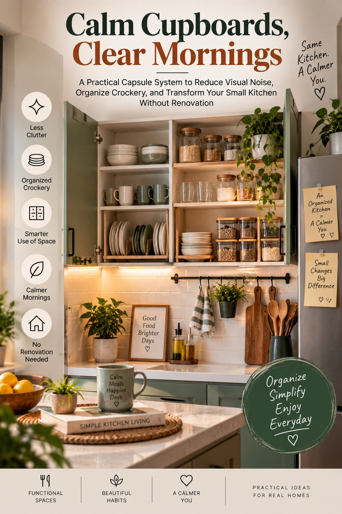
Chapter opener
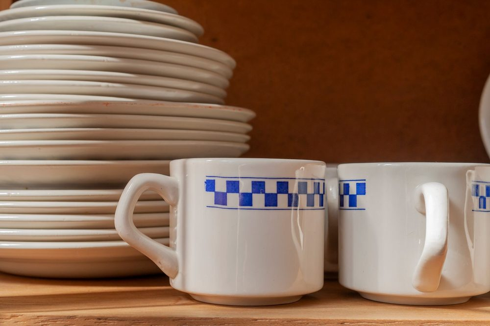
Chapter
Audit and Vision: From Visual Noise to Calm Intent
This book is a decision system for crockery in a small kitchen: what to keep, how many, which material, how to stack, how to wash and dry, how to host, how to replace. Calm = easy access + appropriate quantity + visual consistency + predictable return locations. The 6-Fit Test is the backbone. Design numbers in later pages are heuristics, not laboratory laws. Prices are in US dollars.
Day 1 · Understanding Visual Noise
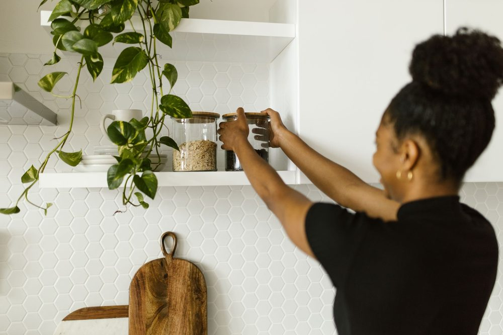
Day 1
Understanding Visual Noise
In this apartment
In her 1BHK apartment in Pune, resident Aditi opens her kitchen cupboard to find a chaotic mix of colorful plates, mismatched mugs, and stray lids. This visual clutter overwhelms her every morning, making it hard to focus on breakfast preparation.
Visual noise can drain your morning energy and increase stress.
Today's output: one sentence of calm in your words, plus the 6-Fit Test written on a card.
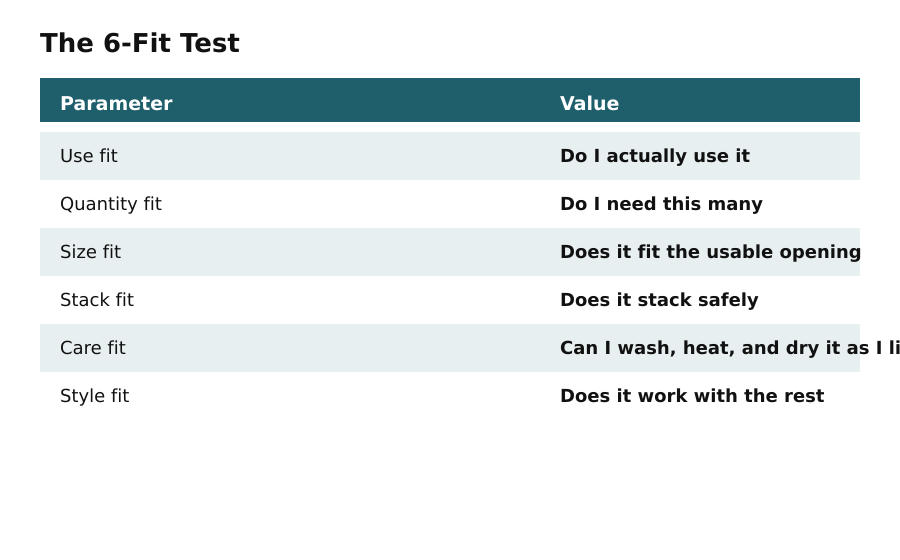
A piece must pass use, quantity, size, stack, care, and style — not only look calm.
Visual clutter can make a small kitchen feel harder to use — more choices, more reaching, more mismatch. That is an observation from lived kitchens, not a cited laboratory study. This book does not use research language to dress up a design heuristic.
Before keeping or buying any piece, ask: Use fit — do I actually use it? Quantity fit — do I need this many? Size fit — does it physically fit the usable opening? Stack fit — does it stack safely with what I own? Care fit — does wash, heat, and dry match my routine? Style fit — does it work with the rest? Fail several tests → do not keep or buy it.
Today's output
Write the calm definition
Run 6-Fit on one mug
Ignore generic organizer ads
Day 2 · Establishing Your Baseline Calm Score
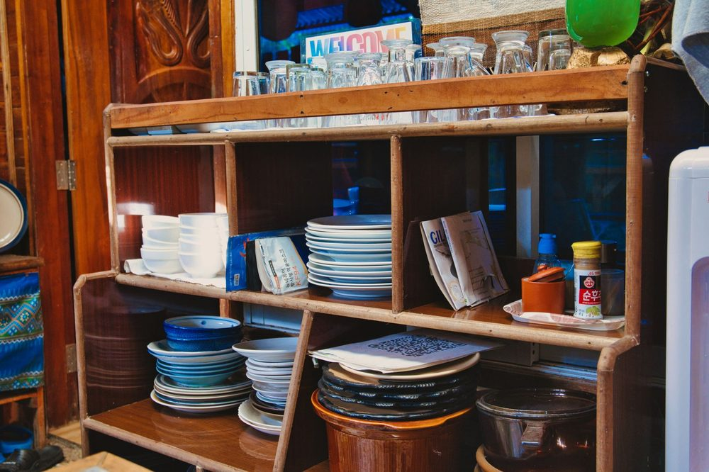
Day 2
Establishing Your Baseline Calm Score
In this apartment
In her Bengaluru rental, Priya assesses her kitchen's visual noise by rating her crockery collection. With a calm score of 2 out of 10, she realizes that her colorful collection is contributing to her morning stress.
The Calm Score is a personal heuristic. Higher is calmer. It is not a scientific instrument.
Today's output: five scores from 0–2 and a total out of 10. Higher means calmer for you.
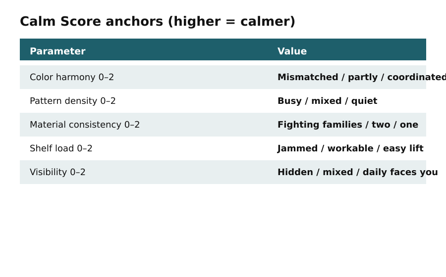
A personal snapshot. Not a validated measurement.
Color harmony: 0 highly mismatched, 1 partly coordinated, 2 strongly coordinated. Pattern density: 0 many competing patterns, 1 a few, 2 quiet. Material consistency: 0 mixed families fighting, 1 two families, 2 one dominant family. Shelf load: 0 jammed, 1 workable, 2 you can lift a stack without a shuffle. Visibility: 0 you cannot see daily pieces, 1 some, 2 daily pieces face you.
Do not treat a total as a pass mark from a lab. If the number is low, edit quantity and mismatch first, not the wallpaper.
Day 3 · Creating Your Morning Flow Map
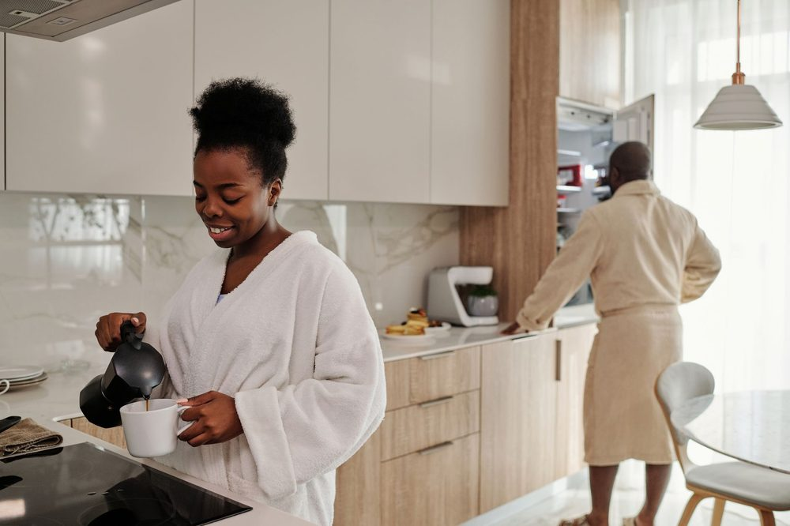
Day 3
Creating Your Morning Flow Map
In this apartment
In a compact Mumbai flat, Rohan sketches his Morning Flow Map to identify friction points in his breakfast routine. He realizes he has to navigate multiple cabinets to prepare his morning coffee and cereal.
Mapping your routine reveals where organization can improve efficiency.
The Morning Flow Map is a visual representation of your daily kitchen routine. By sketching out your movements from wake-up to breakfast, you can identify friction points where organization fails. Rohan discovers that his coffee maker is on one side of the kitchen while his cereal is stored in a high cabinet on the opposite side, leading to unnecessary backtracking.
To create your flow map, draw a simple layout of your kitchen and mark key actions. For example, Rohan notes that he opens the cabinet for coffee, reaches for a mug, and then backtracks to the fridge for milk. Highlighting these steps helps pinpoint areas for improvement, such as relocating frequently used items closer together.
By addressing these friction points, you can streamline your morning routine, making it smoother and less stressful. Rohan's map reveals that moving his coffee supplies closer to the breakfast area will save him time and energy.
Day 4 · Defining Your Style North Star
Day 4
Defining Your Style North Star
In this apartment
In her cozy 1BHK in Pune, Neha writes her Style North Star to guide her crockery collection. She envisions a calm, cohesive set that fits within her limited shelf space and budget.
A clear vision statement keeps your kitchen project focused and intentional.
Today's output: constraints in inches and US dollars, plus a note that 95 percent daily-use coverage is a design target, not a measured coverage law.
In addition to your vision, define your constraints, including space limits, budget, and household needs. Neha notes that her cabinet is 24 inches wide, 12 inches deep, and 11 inches tall per shelf, and she has a budget of about twenty US dollars. This information will help her make informed decisions when selecting new items.
By anchoring your edits and purchases to this North Star, you ensure that every choice aligns with your vision, reducing decision fatigue and enhancing your kitchen's overall calm.
Chapter opener
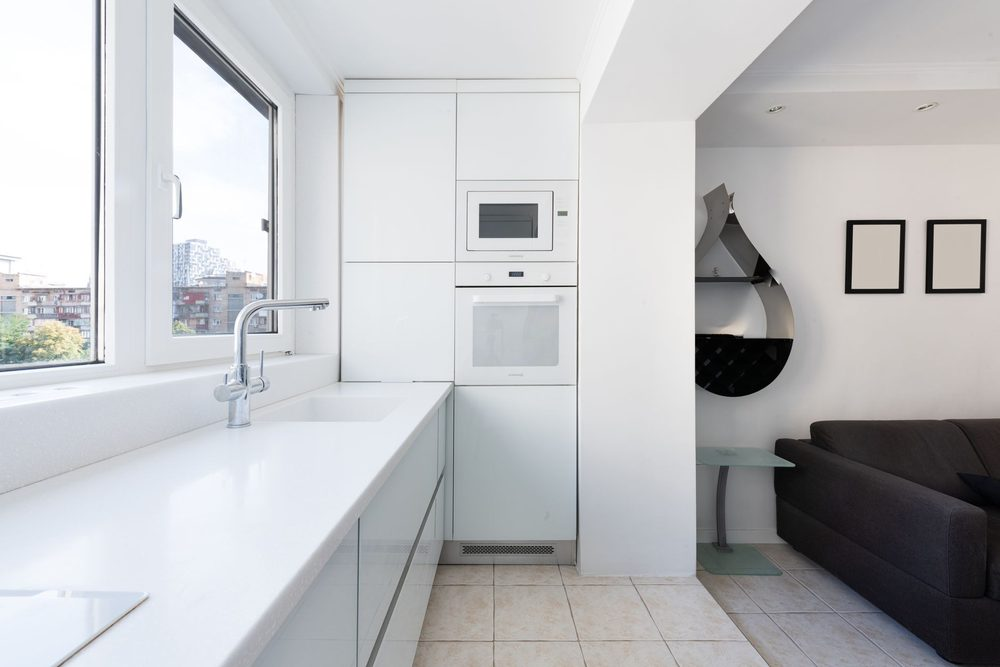
Chapter
Edit and Prioritize: The Five-Step Sprint Workflow
Transform your kitchen into a clutter-free zone with the Five-Step Sprint Workflow. This chapter guides you through a structured approach to editing and prioritizing your kitchen items, ensuring a smoother morning routine and a more functional space.
Day 1 · Understanding the Problem
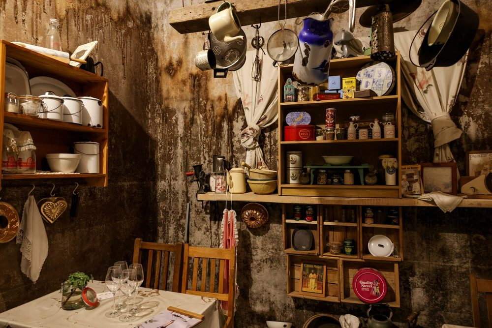
Day 1
Understanding the Problem
In this apartment
In a 1BHK apartment in Pune, resident Priya opens her crowded cupboard each morning, overwhelmed by mismatched plates and chipped bowls. The clutter makes her breakfast routine stressful, as she struggles to find the items she needs.
Visual noise in small kitchens can lead to decision fatigue and morning overwhelm.
Small kitchens magnify every decision. When shelves are filled with stacks of mismatched plates, cracked bowls, and various mugs, it becomes difficult to find a single clean piece for breakfast. This friction can lead to morning overwhelm, where simply opening the cupboard feels like a chore.
Another common issue is the halfway edit. You might pull everything out, create a donation pile, but life interrupts, and the pile lingers. As a result, you end up with less trust in your process, and items creep back into the cupboard, leading to the same cluttered space you started with.
Fuzzy priorities can also contribute to visual noise. Without a clear rule for what stays within reach, daily items mix with occasional platters, forcing you to make the same choices repeatedly, leading to decision fatigue.
Day 2 · The Five-Step Sprint Workflow
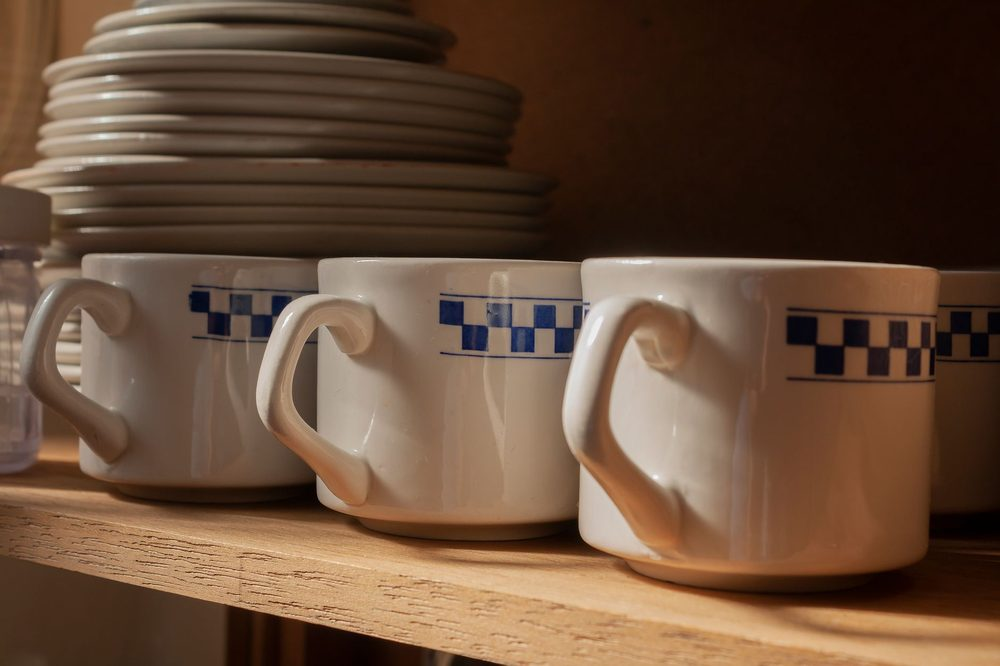
Day 2
The Five-Step Sprint Workflow
In this apartment
In a Bengaluru rental, Rohan decides to tackle his kitchen clutter using the Five-Step Sprint Workflow. He sets a timer and focuses on one shelf at a time, determined to create a more functional space.
A structured workflow allows for quick edits that respect your space and schedule.
The Five-Step Sprint Workflow is a time-boxed approach that helps you edit your kitchen efficiently. By focusing on one cupboard, shelf, or drawer at a time, you can make significant progress without feeling overwhelmed. The five steps are Collect, Categorize, Assess, Decide, and Exit.
Start by collecting items from a defined zone, like the left upper cupboard above the sink. Use a clean towel or tray as your staging area. This keeps the kitchen functional while you work. As you remove items, stack them carefully by type to avoid damage.
Next, categorize the items by grouping like with like. Dinner plates should be together, side plates together, and so on. This simple sorting exposes duplicates and outliers, making it easier to see what you truly need.
Day 3 · Deep Dive: Collect, Categorize, Assess
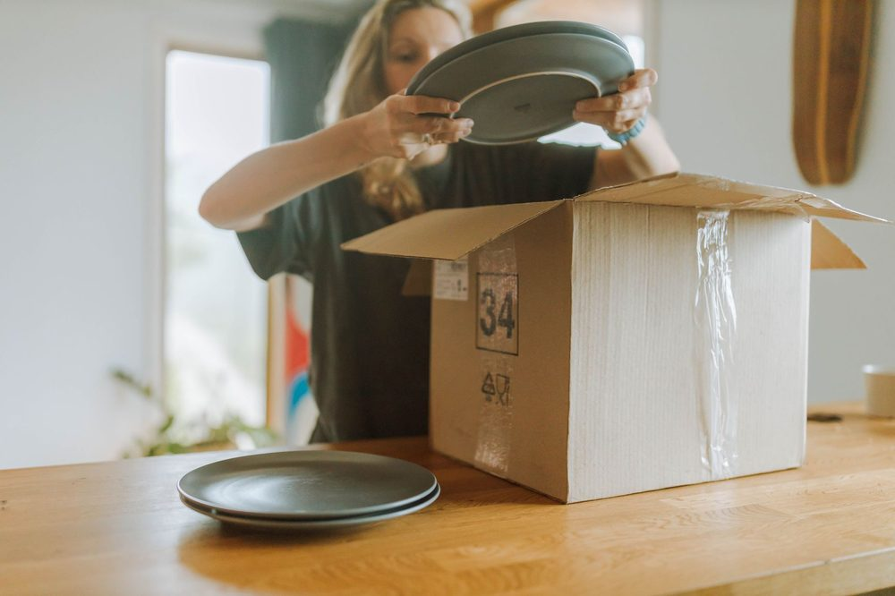
Day 3
Deep Dive: Collect, Categorize, Assess
In this apartment
In a Mumbai flat with a window on only one side, Neha uses the Five-Step Sprint Workflow to declutter her kitchen. She focuses on assessing the condition and frequency of use for her items.
Assessing items based on frequency, condition, and compatibility leads to better decision-making.
When you assess your items, consider three lenses: frequency of use, condition, and compatibility. Frequency of use helps you determine which items are essential for your daily routine. If you haven't used a piece in weeks, it likely falls into the B or C category.
Next, check the condition of each item. Look for chips, cracks, or any damage that compromises safety or usability. Removing damaged items immediately lowers visual noise and improves the overall aesthetic of your kitchen.
Finally, consider compatibility. Ensure that items fit well within your cupboard space, nest cleanly, and stack without issues. If an item constantly resists its place, it’s likely an outlier that needs to be exited.
Day 4 · Decide and Exit: Making the Final Cuts
Day 4
Decide and Exit: Making the Final Cuts
In this apartment
In a shared house in Delhi, four roommates work together to decide which kitchen items to keep. They utilize the ABC Priority Grid to streamline their choices.
Using the ABC Priority Grid helps prioritize daily items and facilitates a smoother decision-making process.
When it comes to deciding which items to keep, the ABC Priority Grid is essential. Classify items into three categories: A for daily use, B for weekly use, and C for occasional use. A items should be easily accessible, while C items can be stored higher or in bins.
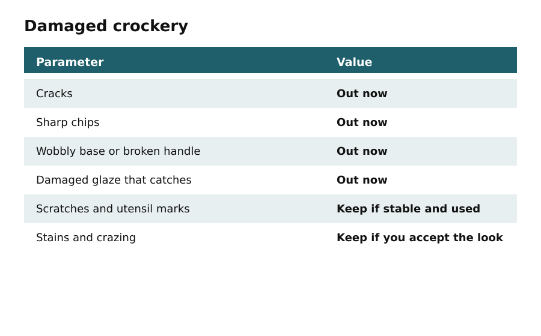
Unsafe is not a styling choice.
Immediately remove: cracks, sharp chips, wobbly bases, damaged glaze you can catch a nail on, broken handles. Evaluate: scratches, utensil marks, staining, crazing, cosmetic defects. Ugly can stay if it is stable and you still use it. Unsafe leaves the kitchen.
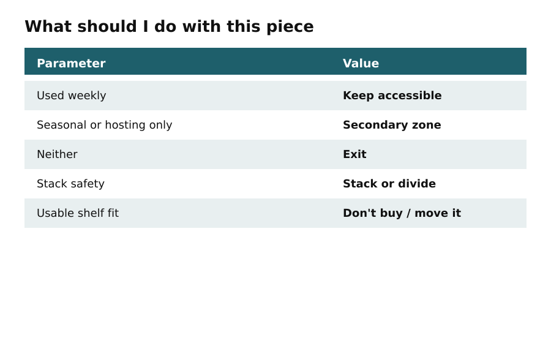
Weekly use beats a pretty orphan.
Decision tree: used weekly → keep accessible. No → seasonal or hosting → secondary. No → exit. Stacks safely → stack. No → divider or don't nest. Fits usable shelf → keep. No → don't buy / relocate.
Day 5 · Action Items and Next Steps
Day 5
Action Items and Next Steps
In this apartment
After completing her first sprint, Anjali in Chennai reflects on her progress and prepares for the next steps in her kitchen organization journey.
Taking action and reflecting on progress reinforces the new organization system.
To maintain the momentum, schedule two sprints this week, focusing on one cupboard shelf per sprint. Gather your tools, including a towel, tape, marker, and three exit boxes for donations, recycling, and selling.
Print or write your ABC Grid and post it inside the cupboard for quick reference. This will help you remember your priorities as you continue to edit your kitchen.
Capture a before and after photo of your edited zone. Visual evidence of your progress builds confidence and motivation to keep going. Celebrate your achievements and note what worked well for future sprints.
Before you move on
Schedule two sprints this week
Prepare your tools: towel, tape, marker, three exit boxes, sponge, tray
Print or write your ABC Grid and post it inside the cupboard
Set exit deadlines: seven days for donation and recycling, three days to list any items for sale
Capture a before and after photo of your edited zone
Chapter opener
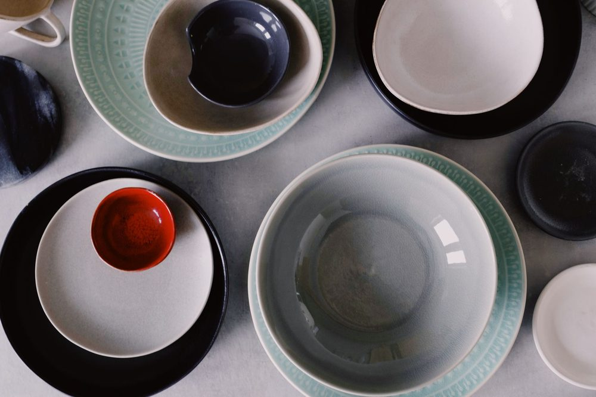
Chapter
The Capsule Crockery Method: Build a Cohesive Everyday Set
This chapter focuses on creating a streamlined crockery set that simplifies your kitchen experience while maintaining visual harmony. By following the Capsule Crockery Method, you can build a collection that caters to your daily needs without overwhelming your space.
Day 1 · Defining Your Core Set
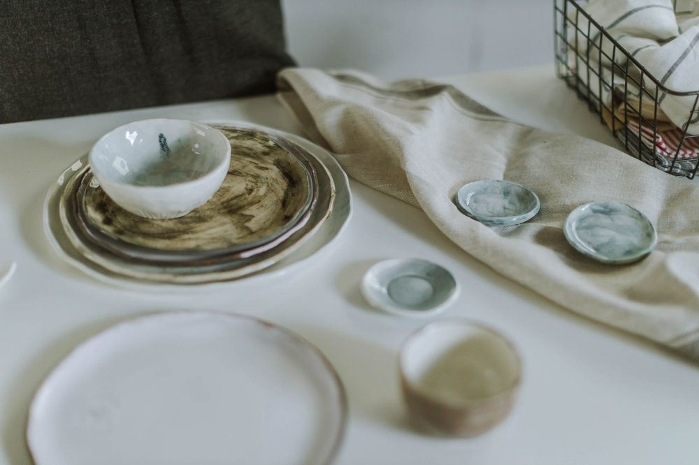
Day 1
Defining Your Core Set
In this apartment
Ravi lives in a 1BHK apartment in Pune with a 9-foot living room. He often hosts friends for dinner but also enjoys quiet breakfasts alone. To streamline his kitchen, he decides to define his core crockery set.
Cover most daily meals. Ninety-five percent is a heuristic, not a lab coverage rate.
Today's output: a smallest-viable list for your household, then a wash-frequency modifier.
One person starting point: two dinner plates, two bowls, two mugs, two glasses, one side plate, one katori or extra bowl if you eat thali-style. Couple: four of each daily type. Four people: six to eight of daily plates and bowls if you wash once a day; four if you run a dishwasher twice. Six people: scale users × cycles between washes, then add a small buffer — not a second matching set for the shelf.
Separate counts for everyday plates, side plates, bowls or katoris, mugs, glasses, serving ware, and guest pieces in a secondary zone. N+2 remains a quick-start shortcut only when you wash often and eat simply.
Before you move on
Write household size
Write washes per day
List daily vs guest pieces
Day 2 · Quantity from wash cycles, not N+2 alone
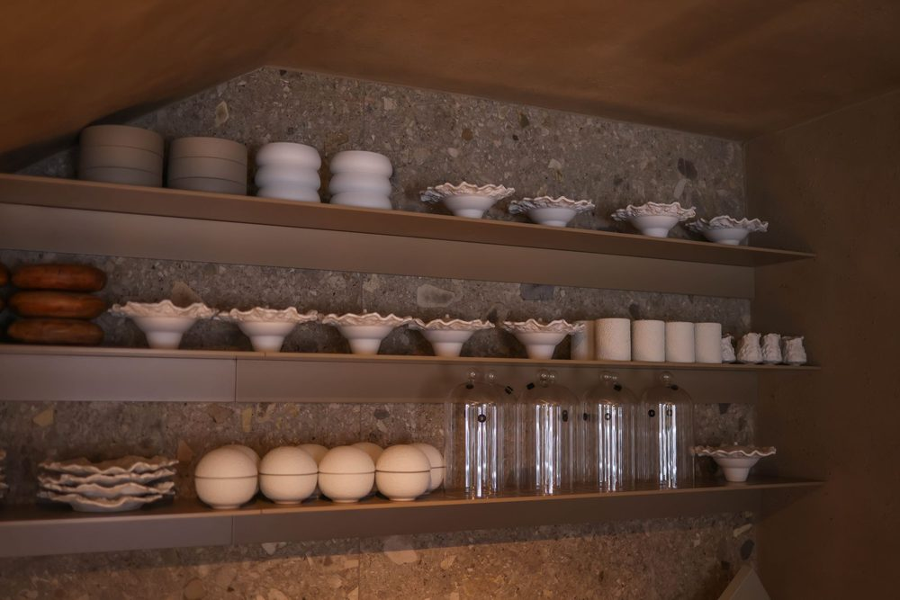
Day 2
Quantity from wash cycles, not N+2 alone
In this apartment
Anjali shares her 1BHK apartment in Bengaluru with her partner. They often have guests over for dinner, which makes planning their crockery set crucial.
Everyday pieces ≈ users × usage cycles between washes + a practical buffer. N+2 is a shortcut.
Today's output: one number per category using users × cycles + buffer. Hosting pieces are extra and stored apart.
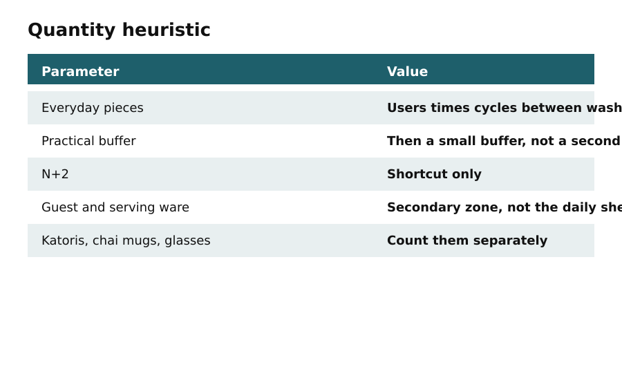
Design aid. Adjust for thali, chai, and how often you actually wash.
Four people washing once a day need more plates than four people with two dishwasher runs. Work-from-home lunches, children, chai mugs, and separate bowls for dal and rice all add cycles. Serving bowls and guest plates do not sit in the daily stack.
Guest mode: keep the everyday count visible; park extras in a secondary zone. Do not size the whole kitchen around a festival dinner.
Today's output
Count users
Count cycles between washes
Park guest ware off the daily shelf
Day 3 · Material, heat, and the maker's label
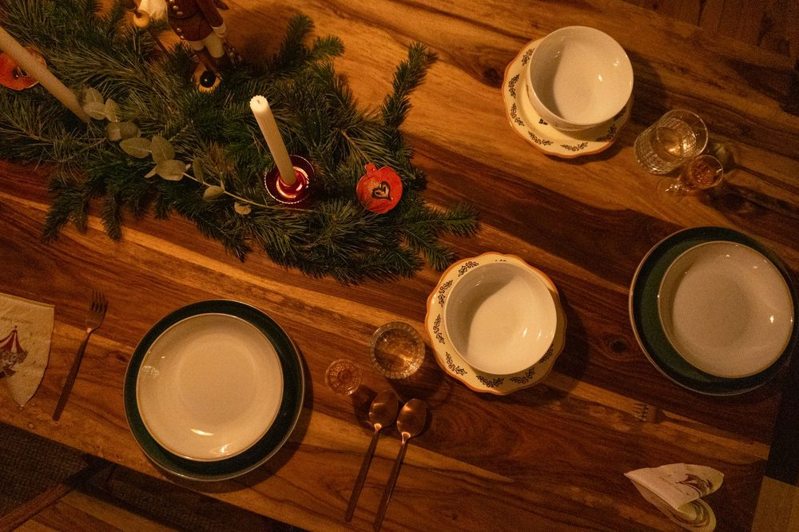
Day 3
Material, heat, and the maker's label
In this apartment
Meera lives in a compact Mumbai flat with limited storage. She wants to ensure her crockery set is both functional and visually cohesive.
Always verify the manufacturer's instructions. This matrix is a starting comparison, not a certification.
Today's output: one material family for everyday, checked against microwave, dishwasher, oven, freezer, hot food, metallic rims, and thermal shock.
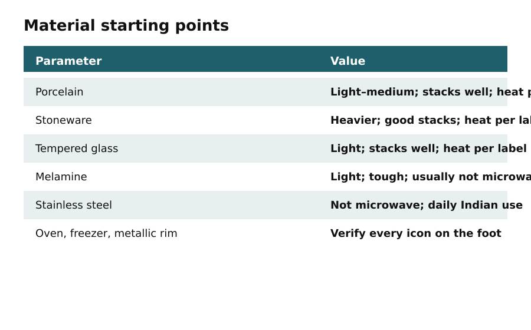
Star means check the label. Not a lab rating.
Porcelain: often lighter, stacks well, usually microwave and dishwasher if the maker says so. Stoneware: heavier, good stacks, same care caveat. Tempered glass: compact stacks, still breakable. Melamine: light, low break, generally not for microwave; dishwasher only if labeled. Stainless steel: Indian daily workhorse, not microwave, usually dishwasher-safe if labeled, stains less from turmeric if you wash promptly. Earthenware and bone china: check heat and chip rules. Plastic: kids or outdoor, watch heat.
Gold or silver rims, cracks, and thermal shock (fridge-cold into a hot oven) are vetoes unless the maker explicitly allows the use. Chipped glaze and broken handles leave the everyday set.
Before you move on
Pick one everyday material
Read the foot icons
Reject mystery gold rims for the microwave
Day 4 · Balancing Anchors and Accents
Day 4
Balancing Anchors and Accents
In this apartment
Suresh, living in a shared apartment in Hyderabad, wants to add personality to his kitchen without creating chaos.
Anchors control visual noise, while accents add personality to your crockery set.
Suresh decides to use white and soft beige as his anchor colors, which will help maintain a calm and cohesive look on his shelves. He selects dinner plates and bowls in these neutral tones, ensuring they stack neatly and create a unified appearance.
For accents, he chooses a muted blue for his mugs, which adds a touch of personality without overwhelming the visual balance. By keeping the ratio of anchors to accents at eighty percent to twenty percent, Suresh ensures that his kitchen remains visually serene.
This thoughtful selection allows Suresh to express his style while keeping the overall look intentional and organized, avoiding the chaos that can arise from too many contrasting colors or patterns.
Eighty/twenty anchor-to-accent is a styling heuristic, not a law. Matte is a visual preference. Gloss can be easier to wipe; texture can trap residue; glaze is often more practical for turmeric and oil.
Before you move on
Choose anchor colors that control visual noise.
Select one or two accent colors that complement the anchors.
Maintain an eighty percent to twenty percent ratio of anchors to accents.
Chapter opener
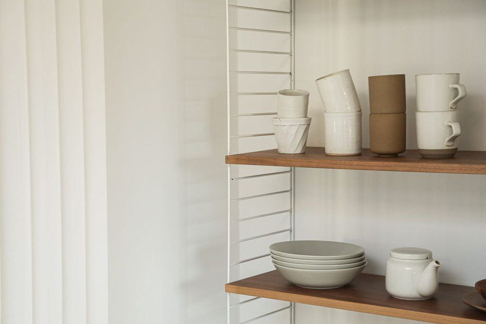
Chapter
Color and Cohesion: Reduce Visual Noise with Contrast
In small kitchens, visual noise can overwhelm your senses and complicate your daily routine. This chapter provides practical strategies to create a calming kitchen environment by reducing contrast and simplifying surfaces, ensuring that your kitchenware is both functional and aesthetically pleasing.
Day 1 · Understanding Visual Noise
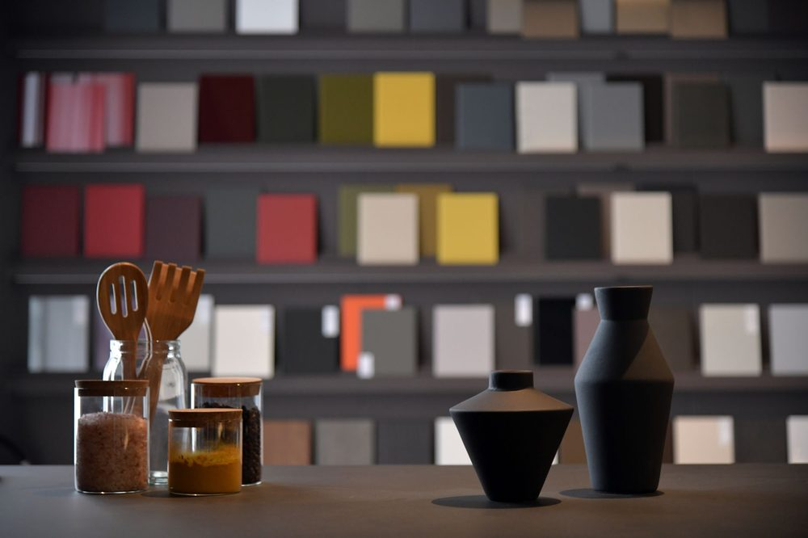
Day 1
Understanding Visual Noise
In this apartment
Ravi lives in a 1BHK apartment in Pune with a compact kitchen that has a 9-foot living room. His shelves are cluttered with a mix of colorful crockery, including bright red mugs and patterned plates. When he opens the cupboard, the stark contrast between the white plates and dark wood shelves creates a jarring visual experience.
Visual noise is often caused by unchecked variety in color and finish.
In small kitchens, the contrast between different colors and finishes can create overwhelming visual noise. For instance, a white plate on a dark shelf produces a hard edge that draws attention, while glossy finishes can catch light and create distracting highlights. This clutter can lead to stress, making it difficult to find what you need quickly.
The key to reducing visual noise lies in managing color variety. When you have a mix of colors, finishes, and patterns, your brain has to work harder to process the information. This can lead to feelings of overwhelm, especially in a space where you need to focus, like a kitchen.
To combat this, start by editing your collection. Focus on creating a cohesive look by selecting a limited color palette and ensuring that the finishes of your items complement each other. This will help your eye to group items together, creating a more serene environment.
Day 2 · The Contrast Cohesion Framework
Day 2
The Contrast Cohesion Framework
In this apartment
Anjali, living in a rented flat in Bengaluru, has a shared wall you cannot drill that limits her shelving options. She wants to create a calming atmosphere in her kitchen but struggles with the variety of colors and finishes in her crockery collection.
The Contrast Cohesion Framework helps to create a harmonious visual experience by managing color and finish.
The Contrast Cohesion Framework consists of several components designed to help you create a cohesive look in your kitchen. Start by selecting an anchor neutral that stabilizes the view. This should be a color that complements your fixed elements, such as counters and backsplashes. For example, if your counters are a cool gray, a soft gray anchor would work well.
Next, define your light, medium, and dark tones using the Contrast Ladder. This will help you understand where to place your items for the best visual effect. Aim for soft transitions between tones rather than stark contrasts. If your shelves are dark, consider using medium-toned anchors to soften the jump to light items.
Finally, apply the Two Tone Rule: limit the visible surface variety to two dominant tones plus a small accent. This will help keep your shelves looking organized and calm, making it easier to find what you need.
Day 3 · Horizontal occupancy, then height, depth, and stability
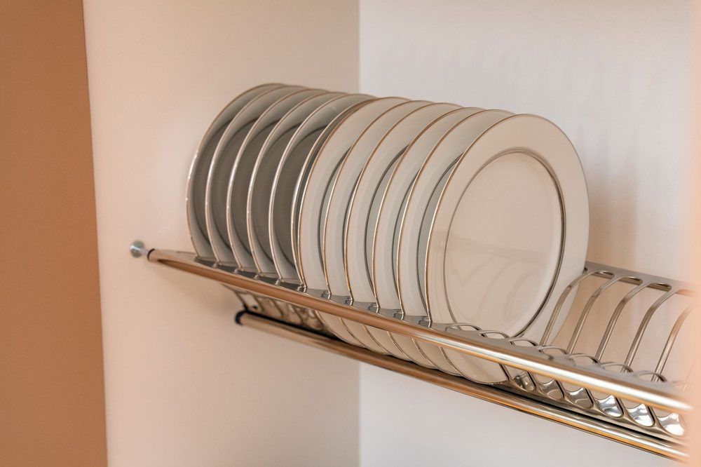
Day 3
Horizontal occupancy, then height, depth, and stability
In this apartment
Neha lives in a small Mumbai flat with a window on only one side. She wants to create a visually appealing shelf that is easy to navigate while cooking.
Occupied width ÷ usable width is occupancy, not capacity. Seventy percent is a starting point.
Today's output: occupancy percent plus three checks — vertical clearance, depth, stack stability.
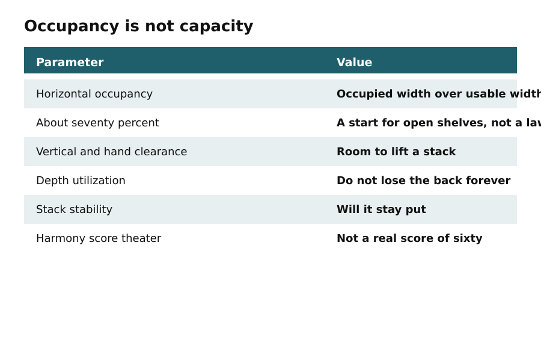
A design heuristic. Closed cabinets and open shelves differ.
Horizontal occupancy % = occupied shelf width ÷ usable shelf width. That ignores depth, stack height, door swing, corners, and hand clearance. A closed deep cabinet can run fuller than an open shelf. Treat about seventy percent on an open shelf as a starting point, not a fixed target. Your usable limit depends on hand clearance, stack stability, cabinet depth, door clearance, and how often you grab the stack.
Do not aim for a harmony score of sixty. There is no reproducible instrument that produces that number. If colors fight or stacks wobble, edit quantity and mismatch.
Chapter opener
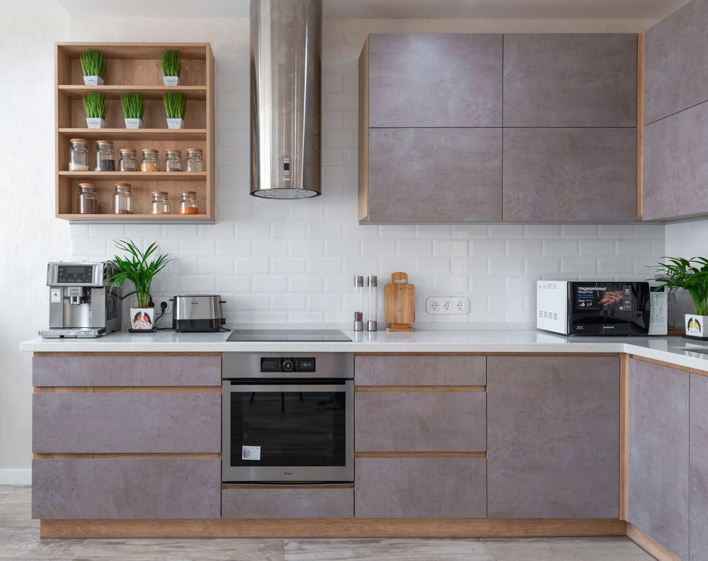
Chapter
Storage Mapping for Tiny Spaces: Drawer, Shelf, and Vertical Solutions
Map crockery to cabinet type: stacked plates, nested bowls, mugs that do not hang on a hope. Vertical storage is for light pieces you can still lift safely.
Day 1 · Understanding Your Kitchen's Reach Zones
Day 1
Understanding Your Kitchen's Reach Zones
In this apartment
Riya lives in a 1BHK apartment in Pune with a compact kitchen. She often struggles to find her daily crockery because her upper shelves are too high, and her lower shelves are cluttered with rarely used items.
Mapping your kitchen's reach zones ensures that frequently used items are easily accessible.
Start by identifying your daily items. For Riya, this includes six dinner plates, four breakfast bowls, and four mugs. List these items and categorize them into hot, warm, and cool zones based on how often you use them.
Hot zones should be between waist and shoulder height, where you can reach items without bending or stretching. Riya should place her dinner plates on the lower shelf of her upper cabinet, ensuring they are easily accessible during meal prep.
Warm zones can include lower shelves that require a slight bend. Riya can use the second drawer for her bowls, while her cool zones can be designated for the top shelf where she stores her occasional serving pieces.
Day 2 · Maximizing Vertical Space
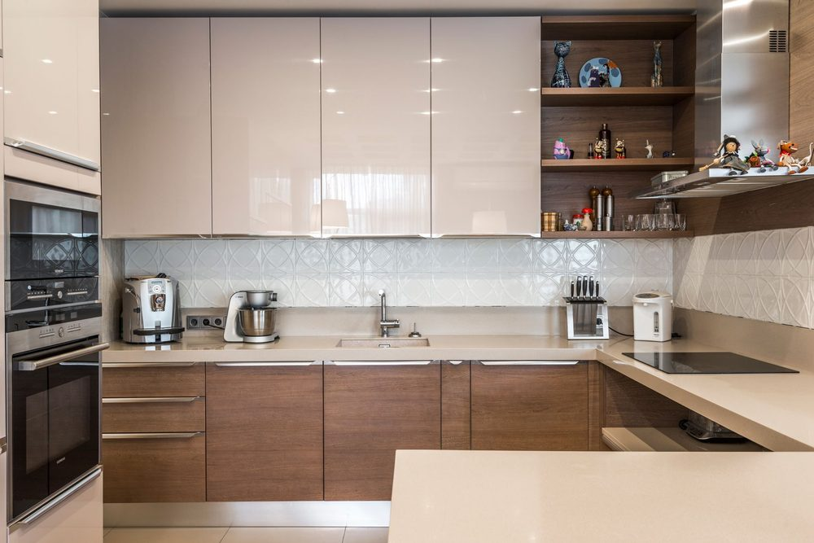
Day 2
Maximizing Vertical Space
In this apartment
Aditi lives in a small rental in Bengaluru with a shared wall you cannot drill that limits her cabinet options. She needs to utilize vertical space effectively to store her crockery without compromising accessibility.
Utilizing vertical space can significantly increase your storage capacity in small kitchens.
Aditi can use under shelf hangers to store her mugs, freeing up shelf space for plates and bowls. By sliding the hanger onto the shelf and hooking the mugs by their handles, she can keep two to four mugs visible and easily accessible.
Slim risers are another effective tool for maximizing vertical space. Aditi can place her plates on the lower level of the riser and shallow bowls on the upper level, preventing tall stacks that could chip rims.
Tension rods can be installed to create mini rails for lightweight items like trays or cutting boards, making use of otherwise wasted vertical space in her cabinets.
Day 3 · Creating a Drawer Grid System
Day 3
Creating a Drawer Grid System
In this apartment
Karan has a small kitchen in Mumbai with limited drawer space. He often finds his lids and small utensils mixed together, making it difficult to find what he needs quickly.
A drawer grid system can bring order to small pieces and prevent clutter.
Karan should measure the interior of his drawer to determine the best modular grid inserts that fit without gaps. Assign a lane for each lid size and use a soft liner under the grid to prevent sliding.
For shallow drawers, Karan can stand lids vertically in narrow sections, supported by tension rods installed as mini dividers. This prevents the classic lid avalanche that can chip edges and create chaos.
Labeling the sections discreetly will help Karan quickly locate items without adding visual noise, ensuring a calm and organized drawer.
Day 4 · Implementing Container Sizing and Stacking Logic
Day 4
Implementing Container Sizing and Stacking Logic
In this apartment
Neha has a small galley kitchen in Delhi with deep cabinets. She often struggles with clutter due to mismatched container sizes and improper stacking of her crockery.
Choosing the right container sizes and stacking logic can prevent clutter and protect your items.
Neha should select bins that are shorter than her stack height and wider than her largest piece. This prevents items from being buried and ensures easy access. Clear or matte containers can help maintain a calm aesthetic in her kitchen.
When stacking, Neha should keep form families together, such as plates with plates and bowls with bowls. Using soft liners between items will protect rims and glazes from scratches and chips.
If her set includes delicate edges, Neha should store them in a warm zone and use dividers to prevent contact with other items, ensuring their longevity.
Chapter opener
Chapter
Open shelves for crockery, not décor clutter
Open shelves hold a short daily stack you can see and dry. They are not a second living-room vignette.
Day 1 · Understanding Visual Noise
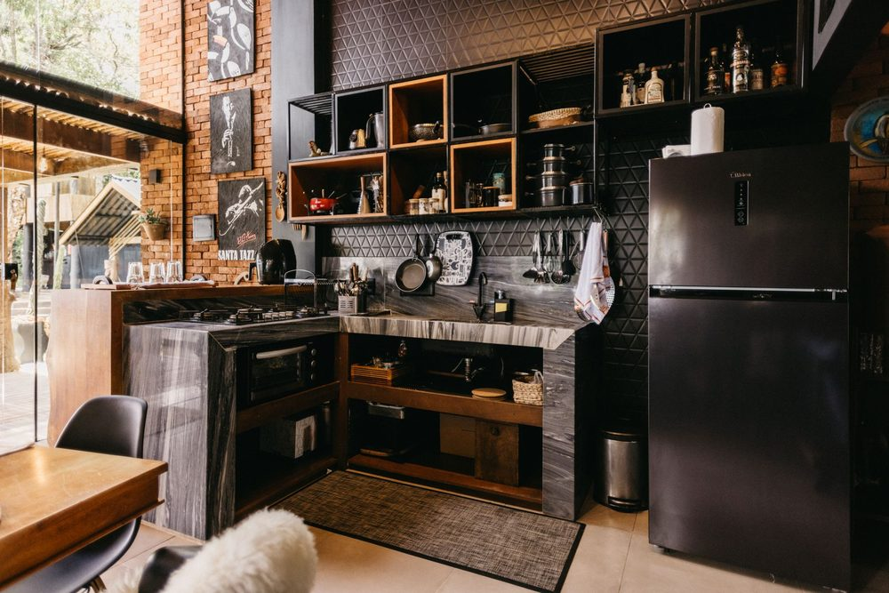
Day 1
Understanding Visual Noise
In this apartment
Riya lives in a 1BHK apartment in Pune, where her kitchen features open shelves. Every morning, she struggles to find her favorite mug among a jumble of colorful dishware, leading to frustration and a chaotic start to her day.
Reducing visual noise is essential for a calm kitchen environment.
The challenge of open shelving lies in the constant visibility of all items. In a small kitchen, this can lead to overwhelming visual complexity, especially when you have a mix of colors, sizes, and patterns. For instance, Riya's shelves are filled with vibrant mugs and bowls, which can make it difficult to focus on finding what she needs quickly.
To combat this, consider grouping similar items together. This not only creates a more cohesive look but also helps your brain process the space more efficiently. For Riya, arranging her mugs by color or size can simplify her morning routine, allowing her to quickly spot her favorite mug without distraction.
Additionally, aim for a balance between aesthetics and functionality. While it may be tempting to display every beautiful piece, prioritize items that you use daily. Riya can keep her most-used items at eye level, while less frequently used items can be stored higher up or in less visible areas.
Before you move on
Group similar items together
Limit the number of displayed items
Prioritize frequently used items at eye level
Day 2 · Curating Your Display
Day 2
Curating Your Display
In this apartment
In her Bengaluru rental, Meera has a kitchen with a shared wall you cannot drill that restricts her shelving options. She wants to make the most of her limited space while ensuring her open shelves look stylish and functional.
Curating your display can enhance both style and utility in a small kitchen.
Meera's challenge is to create a visually appealing display despite the constraints of her kitchen layout. By selecting a few key pieces that reflect her personal style, she can create a focal point on her shelves. For example, she might choose a few colorful ceramic bowls and a couple of elegant glass jars to showcase her spices.
To maintain functionality, Meera should consider the height of her shelves. Items that are used most frequently should be placed at eye level, while decorative items can be positioned higher up. This ensures that she can easily access her cooking essentials without sacrificing style.
Lastly, incorporating a few decorative elements, such as small plants or framed photos, can add personality to the display. However, it's important to keep these accents minimal to avoid clutter. Meera can use a small succulent or a framed recipe card to add interest without overwhelming the space.
Before you move on
Select key pieces that reflect your style
Place frequently used items at eye level
Incorporate minimal decorative elements
Day 3 · Maintaining Order
Day 3
Maintaining Order
In this apartment
Aditi lives in a Mumbai flat with a window on only one side, making her kitchen feel cramped. She needs a system to maintain order on her open shelves to avoid clutter accumulation.
Regular maintenance is key to keeping open shelves organized and visually appealing.
Aditi's kitchen, with its limited natural light, can quickly feel cluttered if items are not returned to their designated spots. To combat this, she can establish a simple system for maintaining order. For instance, she might designate a specific day each week to tidy her shelves, ensuring that everything is in its place.
Additionally, Aditi can involve her family in the maintenance process. By encouraging everyone to return items to their designated spots after use, she can create a shared responsibility for keeping the kitchen organized. This not only reduces clutter but also fosters a sense of teamwork in the household.
Finally, Aditi should periodically reassess her display. If certain items are rarely used or no longer fit her style, she can consider donating or storing them elsewhere. This ongoing evaluation will help her maintain a curated and functional display that enhances her kitchen experience.
Before you move on
Establish a regular maintenance schedule
Encourage family involvement in keeping shelves tidy
Periodically reassess displayed items
Chapter opener
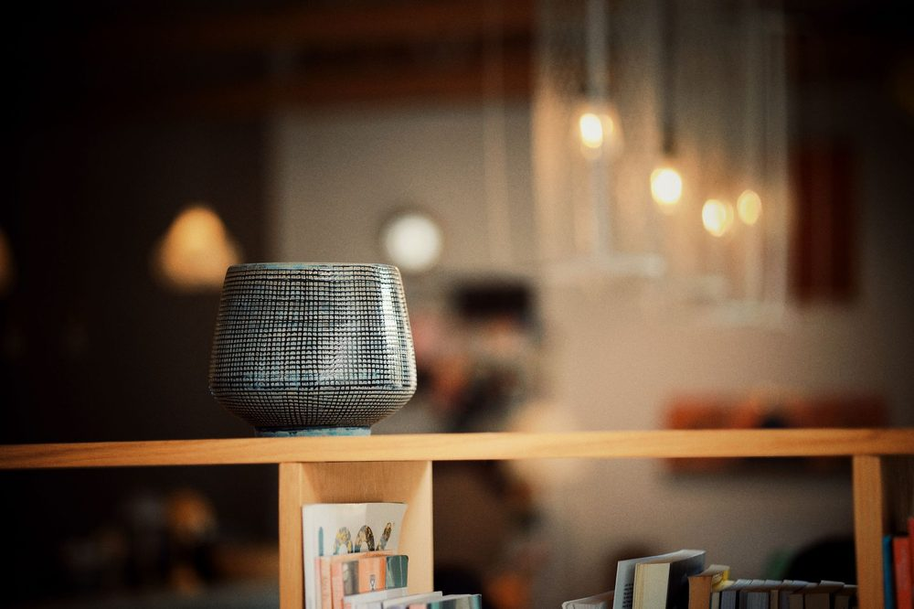
Chapter
Indian-use crockery configurations
City names are illustrations. This chapter sizes plates, katoris, glasses, chai mugs, and serving bowls for 1–2, 3–4, and 5–6 people, then adjusts for wash frequency. It is not another open-shelf styling lesson.
Day 1 · Household-size Indian crockery lists
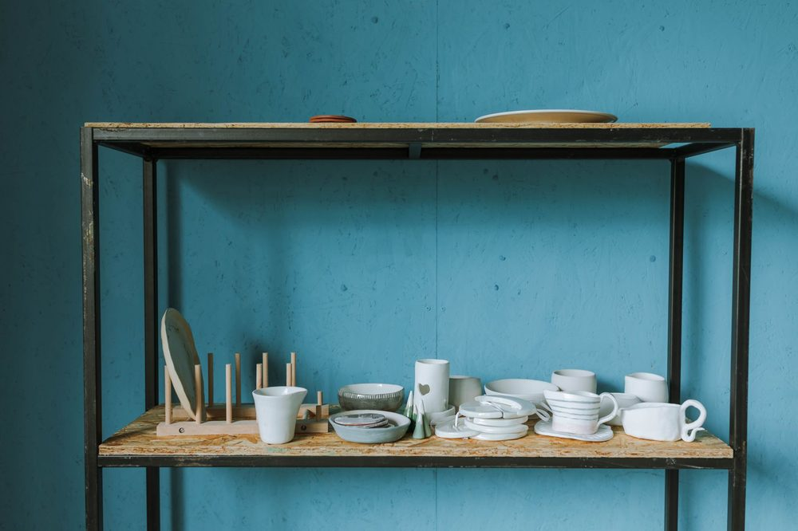
Day 1
Household-size Indian crockery lists
In this apartment
In her 1BHK apartment in Pune, Priya struggles with a cluttered shelf in her 9-foot living room. She decides to apply the Three Five Seven Grouping Rule to create a more organized look.
Odd-number grouping is optional styling. Function uses access and stability.
Today's output: a list for your household size, then a wash-frequency note. Thali, katoris, chai, glasses, and a serving bowl are first-class, not décor.
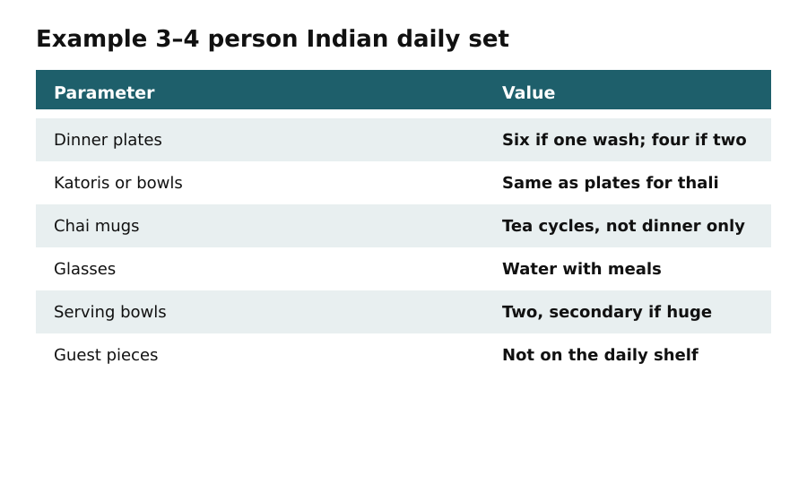
Change the count if you wash more often. Guest ware is extra.
1–2 people: two to four dinner plates, two to four katoris or bowls, two to four glasses, two mugs, one serving bowl, guest extras off-stage. 3–4 people: six daily plates and katoris if you wash once a day; four if you wash twice; two serving bowls; chai mugs counted on tea cycles, not N+2. 5–6 people: users × cycles; keep heavy steel thalis low; do not park the big serving vessel on a high open shelf.
Use odd-number groupings only when styling a visible display. Functional stacks can be even. Turmeric and oil: wash and dry fully before cabinet. Hand-wash steel and ceramic may share a rack — they do not share a wet cabinet.
Before you move on
Pick 1–2, 3–4, or 5–6
Count chai separately
Do not 3/5/7 the katoris for luck
Day 2 · Steel, ceramic, and stain reality
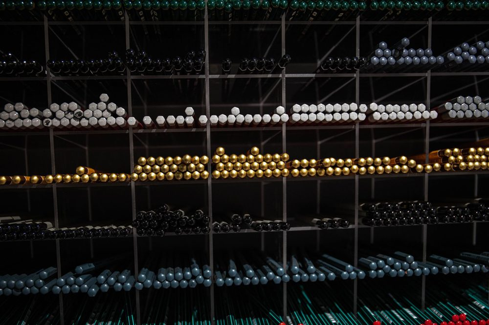
Day 2
Steel, ceramic, and stain reality
In this apartment
In her Bengaluru rental, Aditi has a shared wall you cannot drill that limits her options for decor. She decides to use the Color Bands technique to create a cohesive look on her open shelves.
Bands guide the eye in clean lines, reduce scanning, and make retrieval intuitive.
Today's output: steel vs ceramic zones so turmeric-stained katoris are not hiding wet under a stack.
Stainless daily vessels can live in a lower front zone. Ceramic everyday plates in the nearest cabinet to the table. Serving steel that is heavy stays low. Do not mix wet steel into a closed stack.
Maid, family, or roommates: the return spot must be obvious. Labels only if people still miss.
Before you move on
Choose a color palette
Group items by color or material
Arrange items in horizontal or vertical bands
Day 3 · Open shelf vs closed cabinet for Indian daily ware
Day 3
Open shelf vs closed cabinet for Indian daily ware
In this apartment
In her small Mumbai flat, Neha has a window on only one side, making the room feel cramped. She learns to use Negative Space to enhance the visual appeal of her shelves.
Treat empty space as a design tool to create a clear landing zone for everyday use.
Today's output: daily plates in a closed cabinet if grease and dust are high; a short open stack only if you wipe it.
Open shelves are not required for calm. They are a display of what you actually dry and return.
Before you move on
Identify areas for negative space
Leave empty space beside or above clustered items
Use negative space to enhance accessibility
Chapter opener
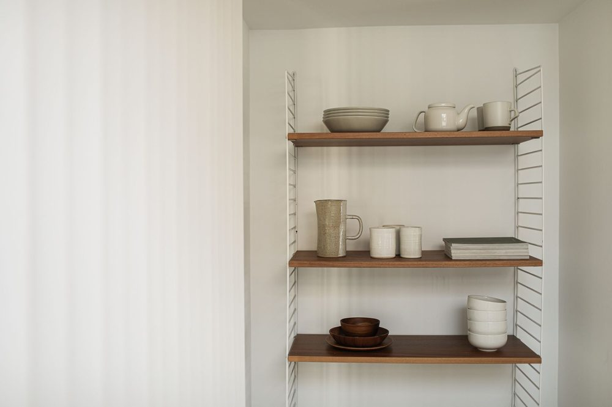
Chapter
Wash, dry, and put away
In a small kitchen the bottleneck is use → sink → wash → rack → cabinet. This chapter is the drying-rack and return path, not more shelf vignettes.
Day 1 · Use, sink, wash, rack, cabinet
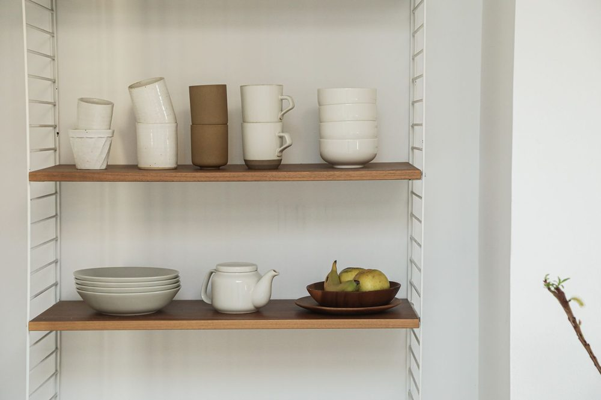
Day 1
Use, sink, wash, rack, cabinet
In this apartment
In her 1BHK in Pune, Priya has a 9-foot living room with a small kitchen shelf. She wants to ensure her mugs and bowls are easy to grab during her busy mornings.
Present items with their most readable face pointing forward for quick access.
Today's output: a path that does not dump wet plates on the eating counter.
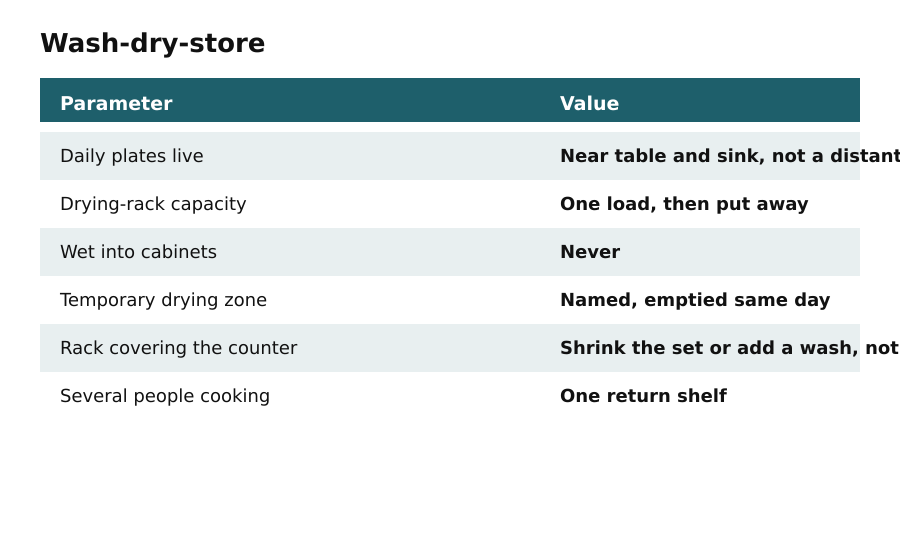
The rack is a queue, not a shelf.
Daily plates live on the shortest path between table, sink, and the cabinet you can reach with a dry hand. Wet crockery never goes straight into a closed cabinet. The rack is temporary storage with a capacity you respect — if the rack eats a third of the counter, shrink inventory or wash a mid-day cycle, do not buy a second rack as furniture.
Hand-wash households need rack space for one wash load, not the whole capsule. Multiple cooks: one return shelf, not five 'temporary' piles.
Before you move on
Mark table-sink-cabinet
Empty the rack today
Ban wet stacks
Day 2 · Safety: hangers, adhesives, stacks, children, heat
In a compact Bengaluru rental, Rohan has limited shelf space but needs to store extra crockery for when friends visit.
Store overflow items behind primary anchors to maintain a clean look while maximizing capacity.
Today's output: a safety pass on hooks, hangers, risers, tension rods, and stacks.
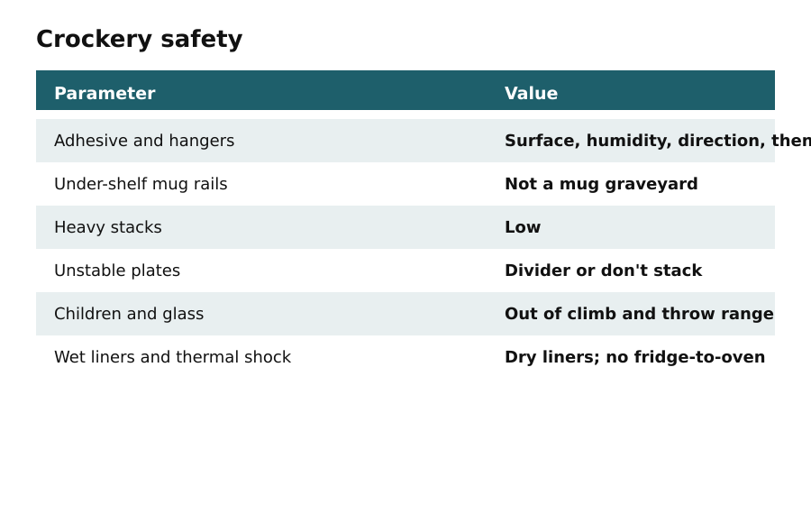
A hook rating on the packet is not your humid cabinet door.
Never rely on a generic weight rating alone. Check the manufacturer's rating for the actual surface, installation method, humidity, and load direction. Test any adhesive or hanging solution with a light load before storing breakable crockery. Removable in theory is not guaranteed damage-free.
No heavy stacks above shoulder height. Unstable plates get a divider or they leave. Keep glass and chips away from children. Thermal shock and wet liners under stacks are moisture and slip risks. High shelves are for light, rare pieces.
Before you move on
Identify primary mugs and bowls for daily use
Store backups behind the front row
Maintain a light look on the shelf.
Day 3 · One-in, one-out
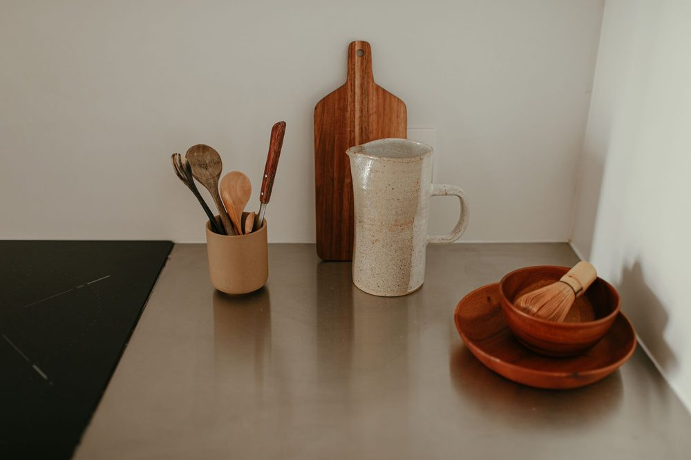
Day 3
One-in, one-out
In this apartment
In her Mumbai flat, Anjali has a small kitchen counter and wants to create a functional yet stylish vignette for her tea and coffee essentials.
Use trays to contain small items and routines, framing a mini station for stability and easy resets.
Today's output: a written one-in/one-out rule for everyday dinner plates.
If you add one everyday dinner plate, replace an existing plate or confirm measured capacity. Same for mugs and katoris. Hosting pieces can enter the secondary zone only if that zone has room.
Before you move on
Select a tray that fits your counter space
Group similar items within the tray
Regularly reset the tray after use.
Chapter opener
Chapter
The 6-Fit Test and the shopping list
Before you keep or buy a piece, run Use, Quantity, Size, Stack, Care, and Style fit. Then measure the usable opening and shop with a checklist. Prices are in US dollars.
Day 1 · 6-Fit at the shop
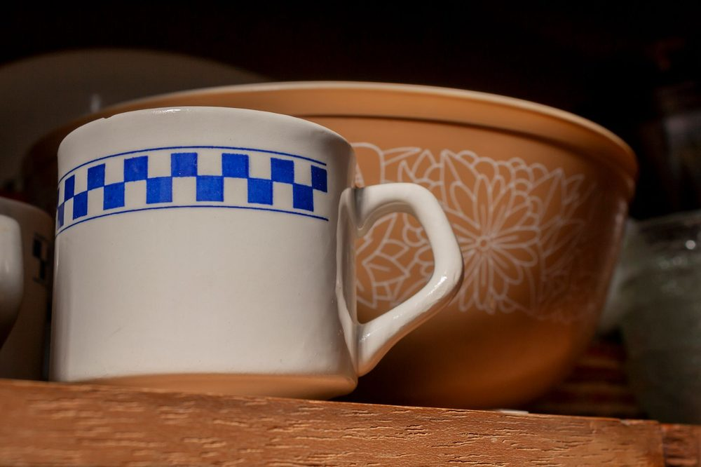
Day 1
6-Fit at the shop
In this apartment
In her 1BHK apartment in Pune, Priya decides to refresh her kitchen shelves. She pulls out her everyday mugs, bowls, and plates, ensuring she only includes items she uses regularly. This helps her focus on what truly matters in her kitchen.
Start with a defined selection of everyday items to create a cohesive look.
Today's output: a shopping card in US dollars. Rearrange and reuse: about $0–25. Basic organizers: about $25–50. Selective upgrades: about $50–100. Crockery replacement: about $100 and up. These bands are planning aids, not prices of a specific brand.
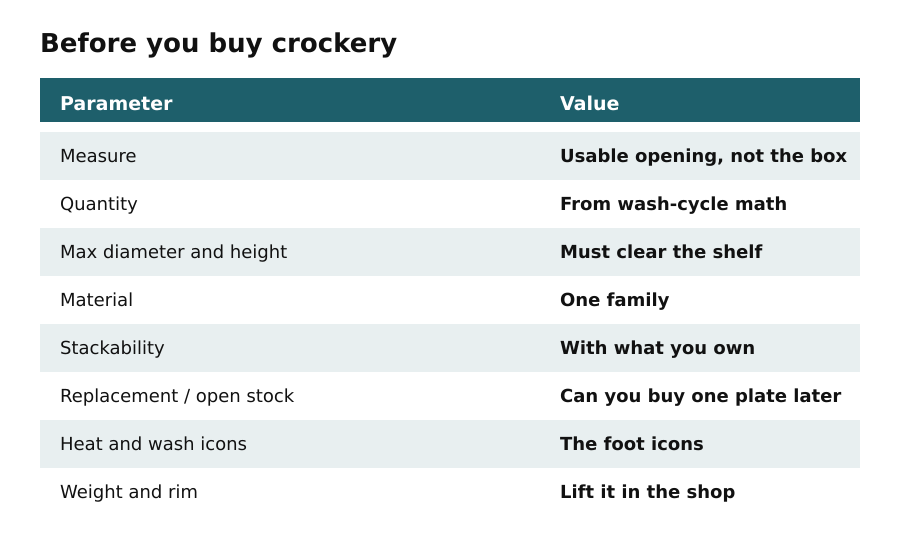
Open stock beats a frozen boxed set.
Before buying: measure storage; required quantity; max diameter and height; material; stackability; individual replacements available; microwave/dishwasher/oven icons; weight; rim durability; sold as a set only or open stock.
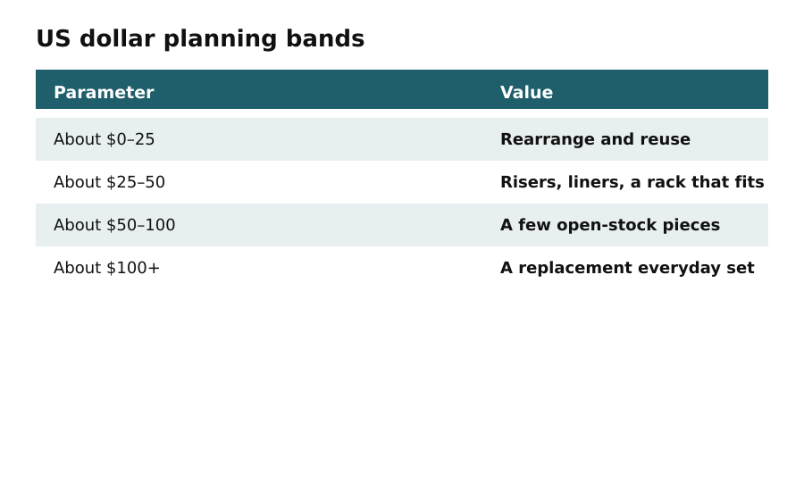
Planning bands, not a store coupon.
A beautiful set is a storage problem when one plate breaks and nobody sells a single.
Before you move on
Tape measure in the bag
Open-stock check
Stay in your dollar band
Day 2 · Heat and wash icons
Day 2
Heat and wash icons
In this apartment
In her Bengaluru rental, Ananya decides to neutralize the backdrop of her kitchen shelves. She installs removable wallpaper in a calming color and wipes down the surfaces to ensure everything looks clean and inviting.
A neutral backdrop enhances the visual appeal of your styled items.
Today's output: every everyday piece's microwave, dishwasher, oven, freezer, and hot-food status from the maker — or it stays off heat.
Unknown icons: treat as hand-wash, no microwave, no oven. Metallic decoration: no microwave.
Before you move on
Choose a neutral backdrop for your shelves
Install removable wallpaper if desired
Wipe down surfaces for a clean look
Day 3 · Weight hierarchy
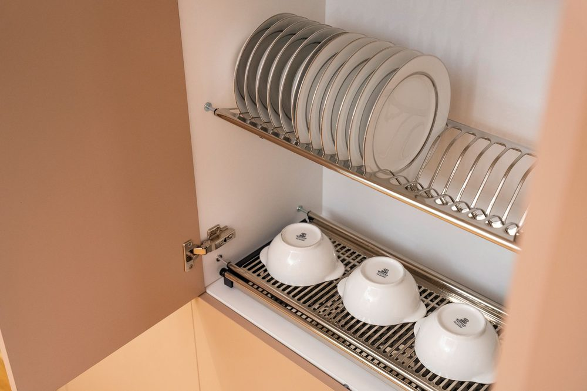
Day 3
Weight hierarchy
In this apartment
In her compact Mumbai flat, Kavita uses storage mapping to optimize her kitchen shelves. She assigns specific zones for high-frequency items, ensuring that everything she needs is easily accessible.
Organizing items by frequency of use enhances functionality.
Today's output: heavy / medium / light mapped to shelves.
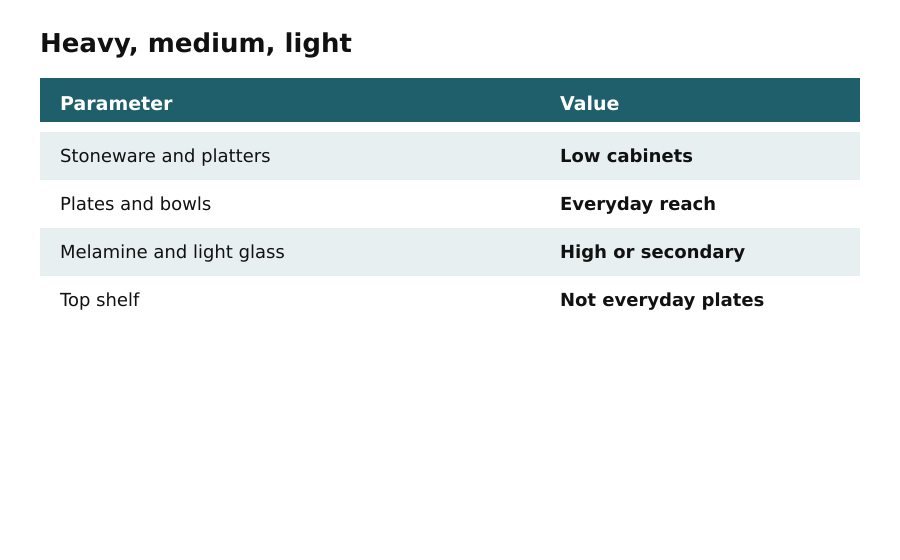
If you cannot lift the stack easily, it is too high.
Heavy: stoneware, large platters, dense ceramic. Medium: everyday plates and bowls. Light: melamine, some glass. Heavy stays lower. Top shelf: guest ware and rare platters, never a stoneware dinner stack.
Before you move on
Utilize storage mapping to determine item placement
Assign zones based on frequency of use
Create a logical flow for easy access
Day 4 · 3/5/7 is optional styling
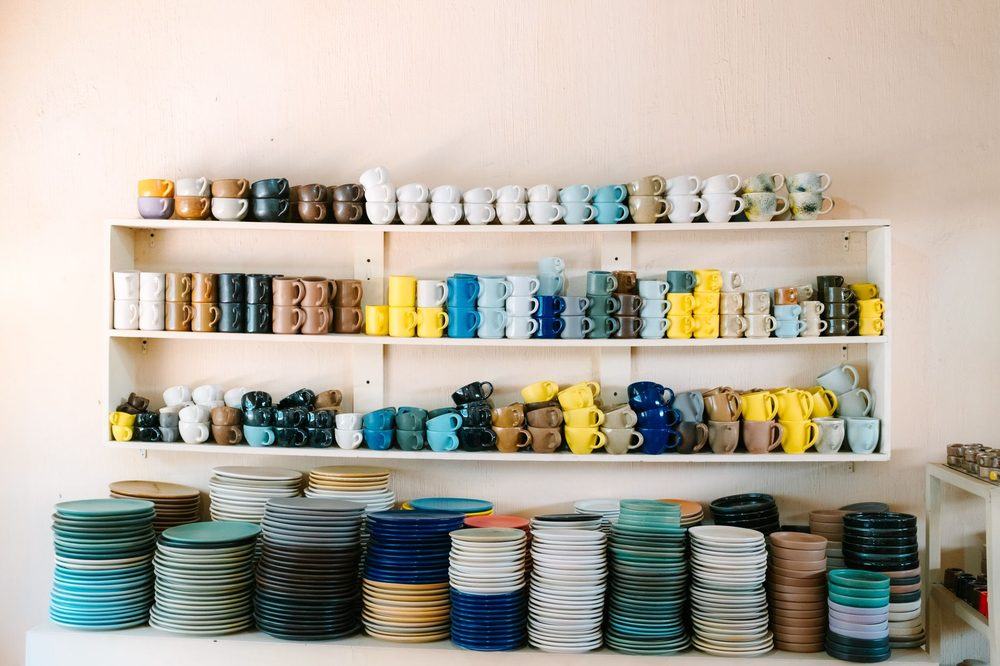
Day 4
3/5/7 is optional styling
In this apartment
In her small 1BHK in Pune, Meera styles her kitchen shelf by grouping her mugs and bowls in odd numbers. She aligns the handles of her mugs for a consistent look and stacks her bowls to maximize space.
Odd number groupings create visual interest and balance.
Today's output: functional stacks that are stable, even if the count is even.
Odd-number grouping is a display convention. Do not rebuild a working plate stack to make five.
Before you move on
Group items in odd numbers for visual interest
Align handles of mugs for consistency
Stack bowls to maximize vertical space
Day 5 · Labels only if people miss
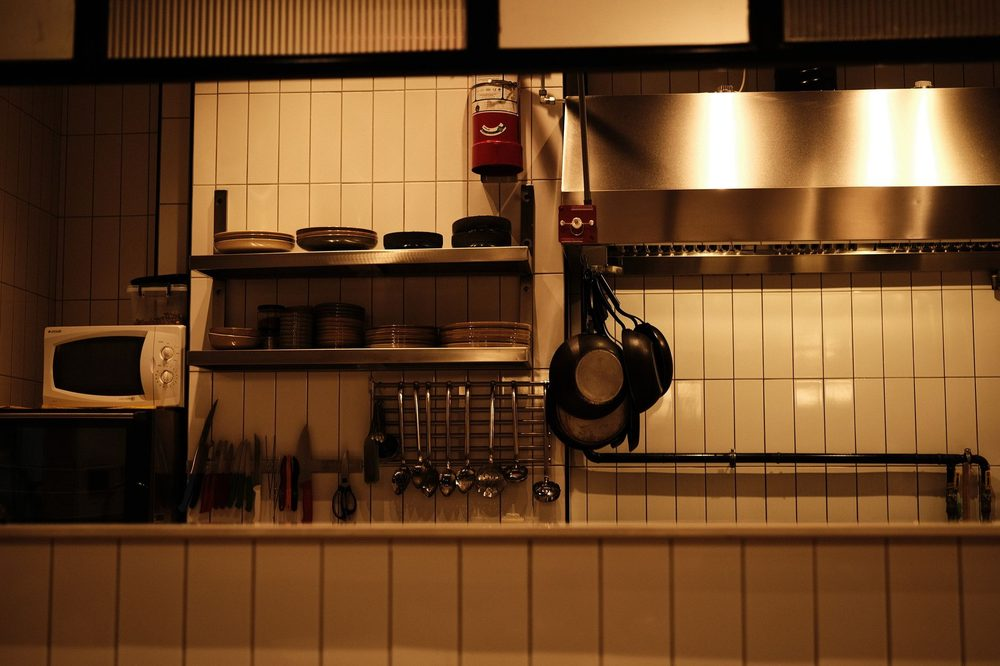
Day 5
Labels only if people miss
In this apartment
In her Bengaluru apartment, Riya leaves intentional negative space on her kitchen shelves. She ensures that at least one grouping has a hand width of empty shelf beside it, creating a balanced and airy feel.
Negative space enhances the overall design and allows items to breathe.
Today's output: skip labels if the layout is obvious. Use them when several people or domestic help keep missing the return spot.
Before you move on
Leave intentional negative space beside groupings
Keep the top third of the upper shelf open if possible
Treat negative space as a design element
Chapter opener
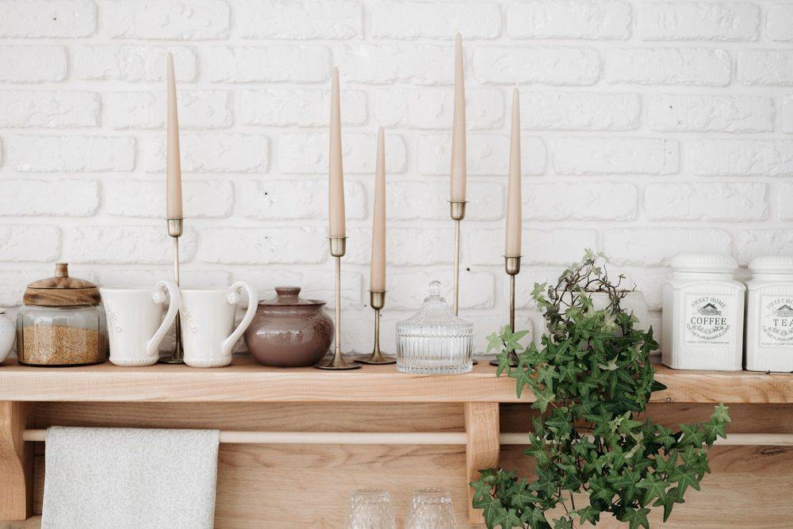
Chapter
Measure the usable opening before you buy
Cabinet outside dimensions lie. Measure the opening, hinges, and stack height before any crockery purchase.
Day 1 · Measure the usable opening
Day 1
Measure the usable opening
In this apartment
In her Pune apartment, Priya has a small kitchen shelf above her sink. She has a collection of colorful mugs and bowls. To make her shelf visually appealing, she aligns the graphics of her mugs and the rims of her bowls to face forward. This creates a cohesive look that draws the eye in a pleasant manner.
Turn the most readable side of each item forward for a cohesive display.
Today's output: one filled measurement card per shelf you will use for crockery.
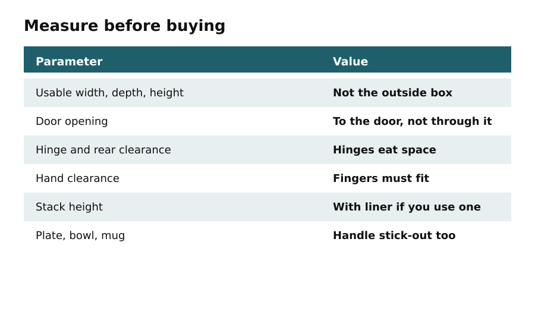
The door and the hinge steal inches the brochure does not mention.
Record usable width, depth, height; shelf thickness; door opening; hinge intrusion; front and rear clearance; hand clearance; stack height; largest plate and bowl diameter; mug height and handle projection. Measure the actual usable opening, not the cabinet box.
Before you move on
Measure one shelf fully
Note hinge steal
Bring the card shopping
Day 2 · Labels are conditional
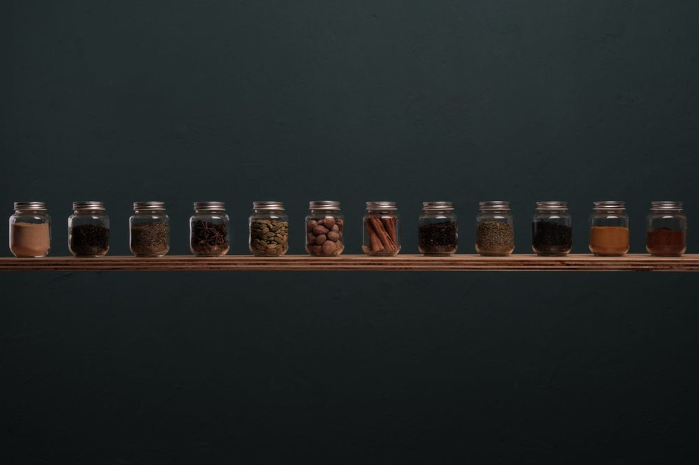
Day 2
Labels are conditional
In this apartment
In her Bengaluru rental, Anjali has a narrow shelf that holds various spices and condiments. To keep track of her items without cluttering the visual space, she places discreet dots at the band edges of her spice jars, ensuring they are hidden from normal viewing angles.
Use discreet markers to categorize items without visual clutter.
Today's output: labels only for the shelf that currently fails household behavior.
Skip them when return is obvious.
Day 3 · Arrange Backup Behind Anchors
Day 3
Arrange Backup Behind Anchors
In this apartment
In her Mumbai flat, Riya has a shelf that holds her favorite dinnerware. To maximize space while keeping the display calm, she places her backup plates behind the front row of her most-used dinnerware, ensuring that the shelf does not feel overcrowded.
Slide extras behind the front row to maintain a calm visual appearance.
Arranging backup items behind the primary display is essential for maintaining a clean and organized shelf. Riya places her extra dinner plates behind her everyday dishes, which are prominently displayed in the front row.
This method allows her to maximize storage without adding visual weight. The front row remains the focal point, while the backups are easily accessible when needed.
By following this principle, Riya finds that her shelf looks less cluttered, and she can easily access her backup plates without disrupting the overall aesthetic.
Day 4 · Frame Utility With Trays
Day 4
Frame Utility With Trays
In this apartment
In her Chennai apartment, Meera has a small coffee station on her kitchen shelf. To create a defined area for her coffee essentials, she uses a slim tray that fits the shelf perfectly, ensuring it blends with her neutral kitchen decor.
Use trays to frame utility and create defined areas for items.
Framing utility with trays is an effective way to organize kitchen essentials. Meera places a slim tray under her coffee station, which includes her coffee maker, sugar, and mugs. This not only organizes her items but also adds a touch of style.
The tray she selects is made from a neutral material that complements her kitchen decor, ensuring that it does not clash with the overall aesthetic. This makes the coffee station a visually appealing focal point.
By using a tray, Meera finds that her coffee-making process is more streamlined, as all her essentials are contained in one area, making it easy to access everything she needs.
Chapter opener
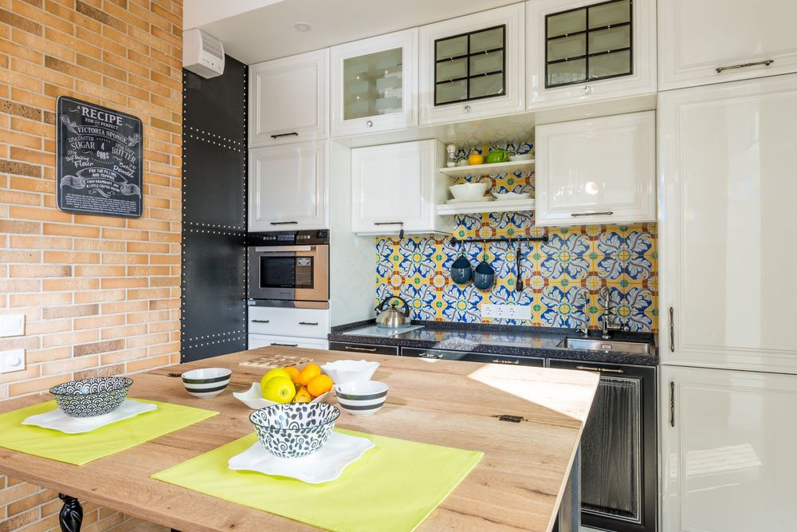
Chapter
Deep cabinets, corners, height, and weight
Everyday plates do not live in blind corners or on the top shelf. Heavy stoneware stays low.
Day 1 · Deep cabinets and corners
Day 1
Deep cabinets and corners
In this apartment
Miguel and Priya live in a 1BHK rental in Pune with two cupboards featuring glass fronts. The interiors were dark, causing their kitchenware to blend together. To brighten the space, they lined the interior back with removable wallpaper in a warm white, creating a fresh backdrop for their dishware.
Use removable wallpaper to enhance the interior of cabinets and make your dishware stand out.
Today's output: a deep-cabinet method and a corner rule.
Deep: pull-out baskets if allowed; front/back zoning (daily front, rare back); two-layer with a riser; lazy Susan only if it turns with plates you own; shallow trays; sliding organizers. Do not bury everyday plates at the back. Blind corners and L-cabinets: rarely used serving ware, never daily plates. Inaccessible rear corners are exit or guest-only.
Case format — Problem: daily plates lost in a deep rental cabinet. Kitchen: four people, one wash. Before: fourteen mixed mugs, eight plates, twelve-minute reset. Decision: six everyday mugs, six plates, secondary guest box. Result: about a four-minute reset and one shelf freed.
Before you move on
Choose a removable wallpaper that complements your kitchen decor.
Organize dishware by color or type for visual appeal.
Use trays to group similar items and maintain organization.
Day 2 · Tall uppers and hosting extras
Day 2
Tall uppers and hosting extras
In this apartment
Sam resides in a compact rental in Bengaluru with a narrow galley kitchen. The space is tight, and the backsplash is busy, making organization crucial. He decided to use an open rack to maximize storage while maintaining a clean look.
Organize open shelves by grouping items by material and maintaining negative space for visual balance.
Today's output: top shelf = guest and seasonal only.
Safe everyday reach is not the top shelf. Heavy ceramic stacks do not go high. Problem: galley open rack. Before: mixed matte and gloss fighting, no path. Decision: daily ceramic in a closed cupboard, steel low, open rack for glasses you dry fully. Result: less dust on plates, faster grab.
Before you move on
Use a clear mat on open shelves to protect surfaces.
Group items by material for a cohesive look.
Limit groupings to three items to maintain negative space.
Chapter opener
Chapter
If the crockery system is not working
Symptom, cause, fix. Reduce inventory before you buy another organizer.
Day 1 · If the system is not working
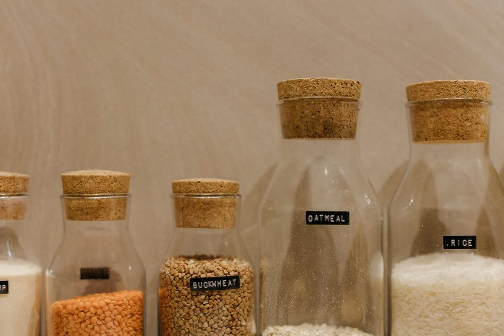
Day 1
If the system is not working
In this apartment
In her 1BHK apartment in Pune, Priya struggles with cluttered shelves in her kitchen. The bright labels on her spice jars clash with the overall decor, making it hard to focus on the items she needs.
Invisible labeling directs habits without adding clutter to the view.
Today's output: one problem, one fix, no new furniture.
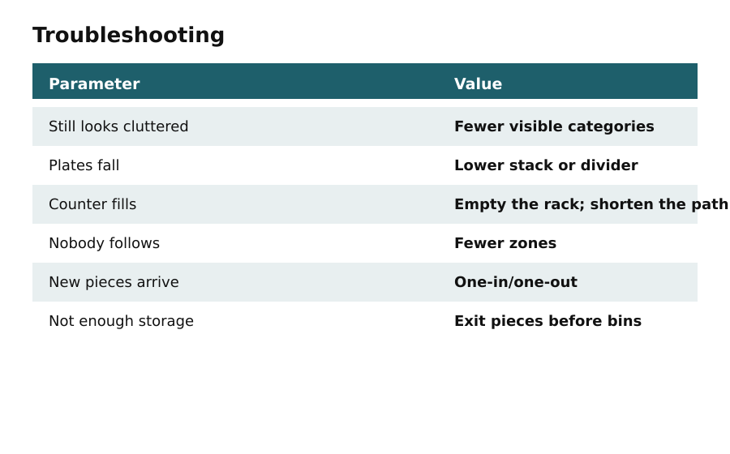
Organizers last. Inventory first.
Shelves still look cluttered → fewer visible categories. Plates keep falling → lower the stack or add a divider. Counter still fills → fix wash-dry-return. Family will not follow → fewer zones. New crockery keeps entering → one-in/one-out. Not enough storage → reduce inventory before organizers.
Before you move on
Name the failure
Apply one row
Do not buy a bin yet
Day 2 · Replacement when a piece dies
Day 2
Replacement when a piece dies
In this apartment
Ravi, living in a Bengaluru rental, finds that his mugs are arranged haphazardly on the shelf. Some face forward while others show their handles, making it difficult for him to quickly grab what he needs in the morning rush.
Face The Front placement standardizes grabbing and returning.
Today's output: a replacement policy.
One plate breaks: replace individually if open stock exists. If not, decide whether the remaining pieces still form a usable set. A stained bowl can stay if safe; a cracked one cannot. A discontinued boxed set is not a reason to keep unsafe pieces.
Before you move on
Ensure all items face the same direction on the shelf.
Use odd number groupings for visual balance.
Regularly assess your arrangement for efficiency.
Day 3 · Household behavior
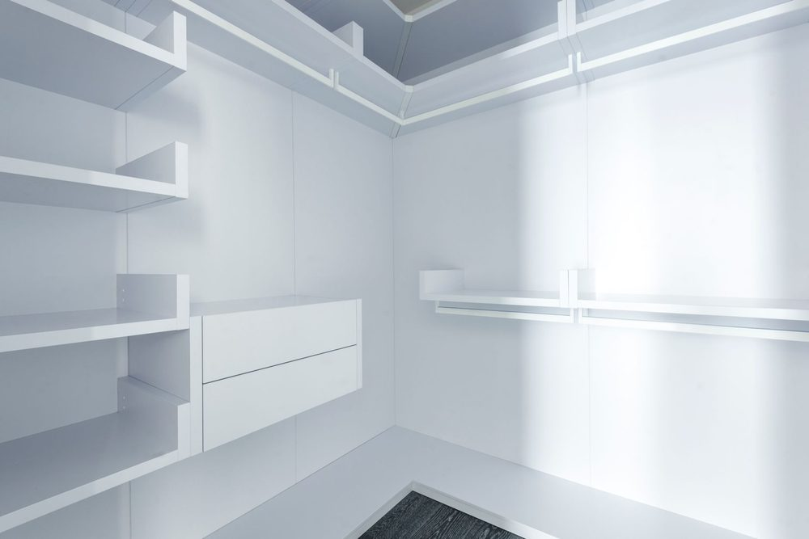
Day 3
Household behavior
In this apartment
In her Mumbai flat, Anjali uses ornate trays to organize her cosmetics. However, the decorative trays add visual noise and clash with her minimalist style, making her space feel cluttered.
Trays That Are Too Decorative add visual noise.
Today's output: who else uses the kitchen — you, a couple, family, roommates, domestic help, children — and one rule they can follow.
The system must survive other people. One daily plate zone beats six labeled sub-zones they will ignore.
Before you move on
Select simple trays that match your color palette.
Avoid ornate designs that create visual clutter.
Regularly reassess your tray choices for functionality.
Day 4 · Capacity is not the same as calm
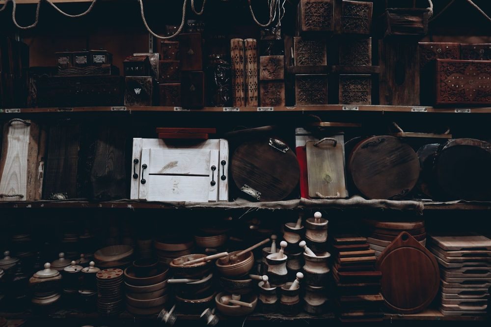
Day 4
Capacity is not the same as calm
In this apartment
In a small 1BHK in Pune, Neha has placed her frequently used kitchen items on a high shelf, making it difficult to access them during cooking. This disrupts her flow and often leads to frustration.
Ignoring Reach Zones breaks flow.
Today's output: six checks on one shelf — capacity, accessibility, stability, hygiene (dry), visual cohesion, maintenance (can others return it). Fail any and the shelf is not done.
Before you move on
Identify your reach zones for everyday items.
Place frequently used items within easy reach.
Regularly assess your shelving for accessibility.
Chapter opener
Chapter
Guest mode, household behavior, and replacement
Everyday plates stay small. Hosting pieces hide. One-in, one-out. Replace singles when you can.
Day 1 · Everyday mode vs hosting mode
Day 1
Everyday mode vs hosting mode
In this apartment
Aditi lives in a 1BHK apartment in Pune with limited kitchen space. She has three shelves in her kitchen that are frequently used but cluttered with mismatched items.
Identify the most important areas for open display to enhance functionality and aesthetics.
Today's output: everyday count on the daily shelf; hosting extras in a box or high rare zone.
Guests do not get the prime shelf.
Example: six plates accessible; six more stored for guests. Do not let Diwali dinner design Tuesday breakfast.
Before you move on
Identify three key display areas
Select and clean capsule crockery
Neutralize one backdrop
Day 2 · Display crockery without a vignette hobby
Day 2
Display crockery without a vignette hobby
In this apartment
Rahul's Bengaluru rental has a shared wall you cannot drill that limits his kitchen layout. He wants to create a visually appealing arrangement on his only shelf.
Use color bands and intentional spacing to create a calming display.
Today's output: if it is on an open shelf, it is daily or it leaves.
Vases and books are not crockery problems. Keep this book on plates, bowls, glasses, and serving ware.
Before you move on
Arrange items into color bands
Build groupings based on shelf size
Create intentional negative space
Day 3 · Returns that survive help and roommates
Day 3
Returns that survive help and roommates
In this apartment
Meera, living in a Mumbai flat with a window on only one side, struggles with keeping her kitchen organized due to frequent use of her crockery.
Standardize the organization of your items to streamline your daily routines.
Today's output: one photo of the daily shelf as the return map. Optional labels.
Before you move on
Add visual and tactile labels
Standardize Face The Front orientation
Place backup items behind anchors
Chapter opener
Chapter
Where daily plates live, and who puts them back
Daily crockery sits on the shortest path from table to sink to dry to cabinet. Labels are optional.
Day 1 · Daily crockery near the table and sink
Day 1
Daily crockery near the table and sink
In this apartment
In a 1BHK in Pune, Anjali struggles with her morning routine. Her favorite mug is often hidden behind novelty mugs, and she finds herself running back and forth between the cupboard and counter, wasting precious time.
Designing your kitchen flow can eliminate morning chaos.
Today's output: mugs and plates on the path you actually walk at breakfast, not a styled far shelf.
This is crockery logistics, not a breakfast-station décor chapter.
Day 2 · Creating Your Breakfast Map
Day 2
Creating Your Breakfast Map
In this apartment
In a Bengaluru rental, Rohan wakes up and heads to the kitchen. He has to navigate through a cluttered space where cereal bowls are stored far from the cereal canister, causing unnecessary delays.
Mapping your breakfast steps reveals inefficiencies.
Rohan starts his day by mapping out his breakfast sequence. He writes down each step: waking up, walking to the kitchen, starting the kettle, pulling out the coffee tray, grinding beans, pouring coffee, and finally drinking it. This exercise helps him visualize his routine and identify where decisions and movements cluster.
For instance, he realizes that his cereal bowls are located across the kitchen from the cereal canister. This mismatch adds unnecessary seconds to his morning routine, which can accumulate into significant time lost over the week.
By mapping out these steps, Rohan can pinpoint inefficiencies and make adjustments to streamline his morning flow. This proactive approach sets the stage for a more organized and efficient breakfast routine.
Day 3 · Building Station Trays
Day 3
Building Station Trays
In this apartment
In a Mumbai flat with a window on only one side, Priya has a narrow kitchen. She decides to create dedicated trays for coffee and cereal to reduce movement during her busy mornings.
Station trays simplify breakfast preparation by grouping necessary items.
Priya selects trays that fit her small kitchen without adding visual bulk. She creates a coffee tray that includes her favorite mugs, teaspoons, sugar, and a canister for coffee beans. This setup allows her to grab everything in one motion, eliminating the need to search through multiple cupboards.
For her cereal, she builds a separate tray that holds two bowls, a cereal canister, and a scoop. By organizing these items into dedicated trays, Priya can streamline her breakfast preparation and reduce unnecessary trips across the kitchen.
The beauty of these stations is that they transform the setup process into a single action. Priya can simply grab the tray, set it on the counter, and have everything she needs right at her fingertips.
Day 4 · Implementing the Set Down Set Up Loop
Day 4
Implementing the Set Down Set Up Loop
In this apartment
In a shared house in Delhi, three roommates often leave the kitchen messy after dinner. They decide to implement a nightly reset to prepare for the next morning.
A nightly reset creates a calm environment for the next day.
The roommates establish a simple two-minute nightly habit called the Set Down Set Up Loop. After finishing dinner, they take a moment to set down any items that do not belong on their breakfast stations and set up essentials for the next morning.
This includes wiping down the trays, returning mugs to their designated spots, refilling sugar or tea tins, and staging one bowl or cup as a cue for the next morning. This routine not only helps in maintaining cleanliness but also prepares the kitchen for a smooth start to the day.
By consistently practicing this loop, the roommates find that their mornings become less chaotic and more organized. They appreciate the calmness that comes from walking into a ready kitchen each day.
Day 5 · Skip labels when the shelf is obvious
Day 5
Skip labels when the shelf is obvious
In this apartment
In a small apartment in Chennai, Meera struggles to keep her kitchen organized. She decides to implement Label Pathways to guide her family in returning items to their proper places.
Label Pathways make it clear where items belong, reducing confusion.
Today's output: remove labels that nobody needed. Keep them only where returns fail.
Chapter opener
Chapter
Maintenance and Upgrades: Ten Minutes a Week to Stay Calm
This chapter focuses on maintaining a serene kitchen environment through simple, effective routines that prevent clutter and enhance functionality. By implementing the Ten Minute Weekly Reset and other strategies, you can keep your kitchen calm and cohesive, even amidst the chaos of daily life.
Day 1 · The Calm Cupboard Maintenance System
Day 1
The Calm Cupboard Maintenance System
In this apartment
Anjali lives in a 1BHK apartment in Pune with a compact kitchen. She often feels overwhelmed by the clutter that accumulates after cooking. To combat this, she adopts the Ten Minute Weekly Reset, which helps her maintain order without feeling like she’s policing her kitchen.
A structured maintenance system keeps your kitchen calm and functional.
The Ten Minute Weekly Reset is designed to quickly restore order without deep cleaning. Start by referring to your Storage Map from Chapter Seven. Open each drawer or shelf and return any misplaced items to their exact homes. Avoid stacking differently; maintain the original layout to ensure everything is easy to find.
Next, conduct a Damage Scan. As you handle each piece, look for chips, cracks, or wobbling. If you find any damaged items, place them in a small bin labeled 'Replace.' This immediate separation helps prevent surprises during your morning routine.
Finally, tidy up labels by rubbing them to ensure they adhere well. If any labels are peeling or smudged, replace them with fresh ones. Keep a small label sheet and pen in your kitchen command corner for quick access.
Do this
Set your reset time on a sticky note inside your cabinet door.
Open, return, and scan items in your kitchen.
Remove items in the Replace bin from circulation.
Before you move on
Choose your reset anchor day and time.
Prepare a small bin labeled 'Replace.'
Stock a label kit with spare labels and a pen.
Day 2 · Inside The Ten Minute Weekly Reset And Maintenance Loop
Day 2
Inside The Ten Minute Weekly Reset And Maintenance Loop
In this apartment
Ravi, a software engineer living in a Bengaluru rental with a shared wall you cannot drill, often finds his kitchen cluttered with mismatched items after hosting friends. To maintain his kitchen’s calm, he implements the Maintenance Loop, which anchors his weekly reset to a habit he already has.
Linking maintenance tasks to existing habits makes it easier to stay consistent.
To implement the Maintenance Loop, first choose a regular trigger for your Ten Minute Weekly Reset. For Ravi, this is Sunday evening after dinner. This timing helps him prepare for the week ahead while keeping his kitchen organized.
During the reset, Ravi sets a timer for ten minutes and briskly moves through his kitchen, following the Storage Map. This keeps the process efficient and manageable, allowing him to return items to their designated spots quickly.
After completing the reset, Ravi rewards himself with a small treat, such as brewing his favorite tea. This reward is part of the reset experience, making it enjoyable rather than a chore.
Do this
Choose a regular anchor for your reset, like Sunday evening.
Do the Ten Minute Reset using a timer.
Pair the reset with a micro reward.
Before you move on
Choose a reset anchor day and time.
Set a timer for your reset.
Keep a reward in mind to make the reset enjoyable.
Day 3 · Step By Step, Your Weekly Reset And Seasonal Swap
Day 3
Step By Step, Your Weekly Reset And Seasonal Swap
In this apartment
Meera and her family of four live in a small galley kitchen in Mumbai. They often struggle with maintaining order due to the high volume of dishes. By following the step-by-step process for their weekly reset, they manage to keep their kitchen functional and calm.
A clear step-by-step process makes maintenance straightforward and effective.
Meera starts her weekly reset by writing her reset time on a sticky note and placing it inside her cabinet door. This serves as a visual reminder to keep her on track.
Next, she opens each cabinet and works clockwise, returning items to their mapped homes, scanning for damage, and tidying labels. This systematic approach ensures nothing is overlooked and keeps the kitchen organized.
After the reset, Meera updates her Quick Win List with any friction points she noticed, such as a drawer that slides too easily or a mug that snags. This helps her keep track of small improvements that can be made.
Do this
Write your reset time on a sticky note and place it inside your cabinet.
Open, return, and scan items in your kitchen.
Update your Quick Win List with any friction points.
Before you move on
Set your reset time as a visual reminder.
Capture friction points on your Quick Win List.
Ensure labels are tidy and clear.
Day 4 · Sustaining Calm And Preparing For The Next Upgrade
Day 4
Sustaining Calm And Preparing For The Next Upgrade
In this apartment
Aditi, a student living in a shared apartment in Delhi, often finds her kitchen cluttered with mismatched items from her housemates. By implementing the Upgrade Ladder and Smart Sourcing Guide, she manages to enhance her kitchen without adding clutter.
Strategic upgrades can enhance functionality without overwhelming your space.
Aditi uses the Upgrade Ladder to plan small improvements in her kitchen. She starts with Rung One, adding protective shelf liners to her main cabinet and snug dividers in drawers to keep everything organized and stable.
Next, she focuses on matching her everyday set. Aditi replaces her mismatched bowls with a cohesive set that stacks beautifully, reducing visual clutter and enhancing the overall aesthetic of her kitchen.
When something breaks, use the replacement policy. When you want a new accent plate, one-in/one-out. When you move, measure the new usable openings before the old set travels.
Do this
Define your Upgrade Ladder and plan small improvements.
Draft your Smart Sourcing Guide before shopping.
Test one piece first before committing to a full set.
Before you move on
Define your next one or two rungs on the Upgrade Ladder.
List color and form rules in your Smart Sourcing Guide.
Plan a seasonal swap for your kitchen items.
Chapter opener
Chapter
Edit Sprint and Exit Paths Checklist
A practical system to declutter and style crockery so small kitchens feel calm at first light. Use fast sessions, clear decision triggers, and planned exits to reduce visual stress while keeping cupboards accessible.
Day 1 · Purpose and Benefits
Day 1
Purpose and Benefits
In this apartment
In a 1BHK apartment in Pune, resident Aditi often feels overwhelmed by her cluttered kitchen. By implementing the Edit Sprint and Exit Paths Checklist, she aims to create a serene cooking environment.
Decluttering reduces visual noise and enhances functionality.
The Edit Sprint and Exit Paths Checklist is designed to cut down morning overwhelm by removing visual noise and mismatched items from your kitchen. Aditi found that by focusing on her crockery, she could create a more peaceful space for her morning routine.
This method protects the function of the kitchen during edits, ensuring that it remains usable throughout the process. Aditi can still prepare her meals while she sorts through her items, making the transition smoother.
By using simple decision triggers and scripts, Aditi can speed up her choices, making the decluttering process less daunting. The checklist also provides clear exit paths for items that are no longer needed, allowing clutter to leave quickly.
Day 2 · How to Use the Checklist
Day 2
How to Use the Checklist
In this apartment
In her Bengaluru rental, Riya has a small kitchen with a shared wall you cannot drill that limits her storage options. She decides to tackle her mugs first using the checklist.
Focus on one category at a time to streamline the decluttering process.
To begin, Riya selects her focus category: mugs. She sets a time-boxed sprint of 30 minutes to work through her collection. This focused approach helps her avoid feeling overwhelmed by the entire kitchen at once.
Riya follows the Five Step Edit Workflow, starting by defining her calm goal. She aims to have only four daily mugs visible on her shelf, eliminating duplicates and mismatched items that clutter her space.
After emptying and staging her mugs on the counter, Riya uses decision triggers to evaluate each one. She identifies duplicates and mismatched mugs that do not fit her aesthetic and decides to exit them, making her choices clear and efficient.
Day 3 · Main Content: Time Boxed Session Plan
Day 3
Main Content: Time Boxed Session Plan
In this apartment
In a compact Mumbai flat, Vikram struggles with a tiny galley kitchen filled with mismatched plates. He plans a 15-minute sprint to tackle this issue.
Time-boxed sessions help maintain focus and efficiency during decluttering.
Vikram sets up his counter staging area by clearing the space and placing his morning essentials tray aside. He prepares an exit container for items he plans to donate or recycle, ensuring he has a clear plan for what to do with the items he decides to exit.
He follows the Five Step Edit Workflow, starting with Step 1: Aim. Vikram defines his goal as having one shelf of daily plates visible without any stacks above eye level. This clarity helps him stay focused during the sprint.
During Step 3, Vikram evaluates each plate for duplicates, damage, and mismatches. He identifies two oversized plates that block his cabinet door and decides to repurpose them as serving platters, while ensuring his daily set of four medium plates is easily accessible at eye level.
Day 4 · Tips for Success
Day 4
Tips for Success
In this apartment
In her studio apartment in Delhi, Meera wants to ensure her kitchen remains functional while decluttering. She follows the tips outlined in the checklist.
Implementing best practices enhances the effectiveness of the decluttering process.
Meera decides to edit one type of crockery at a time for speed and efficiency. By focusing solely on her bowls during one session, she avoids the chaos of pulling everything out at once, which can lead to decision fatigue.
She limits her A zone to what fits flat, ensuring no stacking beyond one stable pile per type. This keeps her kitchen organized and visually appealing, making it easier to find what she needs during meal prep.
Using a test box for uncertain items, Meera plans to revisit her decisions after two weeks. This allows her to reflect on her choices without the pressure of immediate decisions, ensuring she only keeps what truly serves her.
Chapter opener
Chapter
Palette and Capsule Builder Worksheet
Design a calm, cohesive capsule crockery set that reduces visual stress and morning overwhelm. This worksheet guides you to select a neutral anchor, a restrained accent, and compatible shapes that stack well and fit small shelves.
Day 1 · Purpose and Benefits
Day 1
Purpose and Benefits
In this apartment
Riya lives in a 1BHK apartment in Pune with a compact kitchen. Every morning, she feels overwhelmed by the clutter of mismatched crockery. By creating a capsule set, she aims to streamline her morning routine.
Heuristics for a capsule, not universal laws.
Today's output: a capsule card using heuristics — most daily meals, not a claimed 95 percent laboratory coverage; occupancy, not a fake harmony score.
Open shelf heuristic. Closed cabinets differ.
Seventy percent fill is a starting point for open shelves. Recalculate occupancy as occupied width ÷ usable width. Then check height, depth, and stability.
Day 2 · How to Use the Worksheet
Day 2
How to Use the Worksheet
In this apartment
Vikram, living in a small rental in Bengaluru, struggles with a shared wall you cannot drill that limits his kitchen layout. He uses the worksheet to define his style and household needs.
Follow the steps in the worksheet to build your capsule crockery set effectively.
Begin by printing the worksheet and gathering necessary tools such as a pen, ruler, and color samples from your counters and backsplash. Observing your kitchen's lighting at different times of the day will help you make informed choices about colors and finishes.
In Section A, define your Style North Star and household needs. This will guide your selections and ensure that your capsule meets your daily requirements. For example, if you have frequent guests, consider how many plates and mugs you will need.
Continue through the worksheet, using the Contrast Ladder and Two Tone Rule to build your palette. Test the compatibility of shapes in Section D and plan quantities in Section E. Finally, in Section F record horizontal occupancy (occupied width divided by usable width) and then check height, depth, and stack stability. That is not a capacity score.
Day 3 · Building Your Palette
Day 3
Building Your Palette
In this apartment
Ananya, a family of four in a Mumbai flat with a window on only one side, uses the worksheet to create a cohesive color palette for her crockery.
Select a neutral anchor and a restrained accent to create a harmonious palette.
In Section B, list your typical meals for the week and identify the most used vessel types. This will help you target your capsule toward the meals you actually cook, as a design goal rather than a measured coverage law. For instance, if you frequently have rice and curry, ensure you have enough bowls and plates to accommodate those meals.
Next, describe the colors and temperatures of your counters and backsplash in Section C. Choose a neutral anchor, such as warm white satin, and a restrained accent, like soft teal, ensuring that the accent does not exceed 20 percent of your total pieces.
Use the Contrast Ladder in Section D to assess how each item will interact with your counters. This step is crucial for maintaining a calm and cohesive look in your kitchen.
Day 4 · Testing Shape and Finish
Day 4
Testing Shape and Finish
In this apartment
Deepak, who lives in a 1BHK in Delhi, wants to ensure that his crockery is both functional and aesthetically pleasing. He uses the worksheet to test compatibility.
Ensure that all pieces are compatible in shape and finish for a cohesive look.
In Section D, evaluate the stackability of your chosen pieces. Ensure that plates, bowls, and mugs have flat bases that touch without wobbling. This is essential for both storage and usability, especially in a small kitchen.
Consider the rim profile of your items. A consistent rim profile, whether flat or gentle coupe, will enhance the overall look of your collection. Choose a primary glaze sheen—matte, satin, or gloss—as a visual preference. Gloss is often easier to wipe; matte can show stains; texture can trap residue. Everyday food use usually favors a sound glaze over a styling slogan.
Finally, ensure that the silhouette of your crockery follows a consistent curve family, whether round or soft square. This attention to detail will create a visually pleasing arrangement on your shelves.
Day 5 · Finalizing quantities and occupancy
Day 5
Finalizing quantities and occupancy
In this apartment
Neha, living in a small flat in Chennai, uses the worksheet to finalize the quantities of her crockery and ensure her shelves are not overcrowded.
Balance shelf load to maintain a calming negative space.
Today's output: quantities from wash cycles; occupancy from usable width; 6-Fit on anything you still want to buy.
Width math plus three checks.
Do not compute a theatrical harmony score. If the shelf is stable, dry, and returnable, you are done.
Chapter opener
Chapter
Renter quick-reference: crockery without wrecking the cabinets
Prices in US dollars. Removable in theory is not guaranteed damage-free. This is the book's ending manual: before buying, before organizing, install, daily, weekly, monthly, breaks, new pieces, moving.
Quick reference · Renter crockery manual
Quick reference
Renter crockery manual
No drill, no hope-and-stick on humid doors, no heavy stacks high.
Before buying: measure the usable opening; 6-Fit; open stock; dollar band. Before organizing: exit unsafe pieces; set everyday vs guest. During installation: no drilling; no screw rails; no cabinet surgery; test one adhesive hook with a light load; expect possible residue and paint risk — 'removable' is not a damage-free promise. Daily: wash, dry, return. Weekly: empty the rack, check chips. Monthly: 6-Fit the orphans. When something breaks: open-stock replace or retire the set's unsafe remainder. When adding crockery: one-in/one-out. When moving: pack stacks with liners; re-measure the next kitchen.
Removable on the packet is not a landlord guarantee.
Do not buy: permanent adhesive, drill kits, screw-mounted rails, cabinet-mod kits, anything your lease forbids. Tension rods and hooks only if the surface and humidity can take a light test. Under-shelf mug hangers are not default safe.
Case — Problem: rental galley, four mugs on failing hooks. Before: twelve-minute hunt, chips. Decision: tray of six everyday mugs, hooks removed. Result: four-minute reset, no new holes.